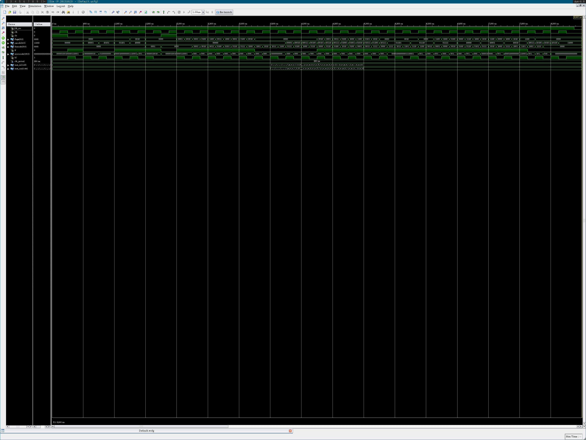
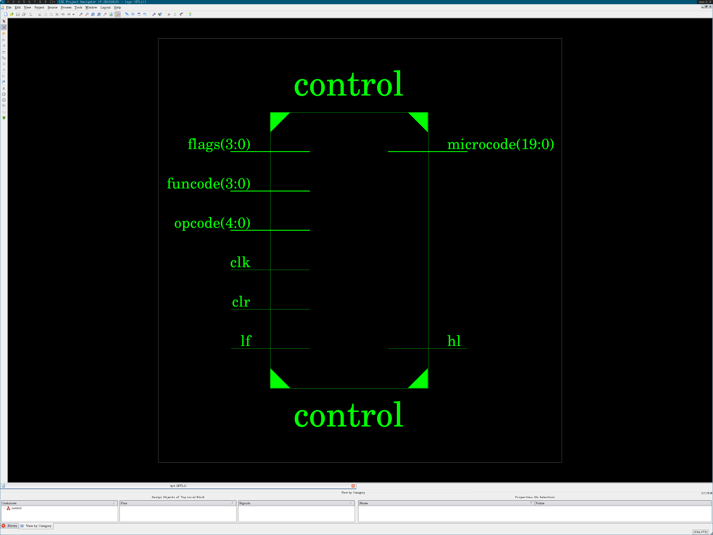
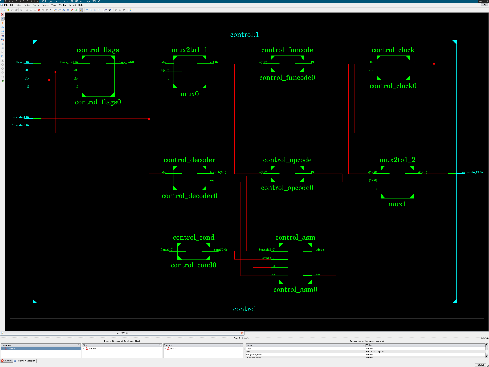

Arch control-arch.vhdl
back to nav
library std;
use std.textio.all;
library ieee;
use ieee.std_logic_1164.all;
use ieee.numeric_std.all;
library work;
use work.ctype.num_base;
use work.conv.str2int;
use work.conv.int2str;
use work.conv.ustdlv;
use work.conv.uint;
entity control is
generic (
debug: boolean := false
);
port (
clk: in std_logic;
clr: in std_logic;
opcode: in std_logic_vector(4 downto 0);
funcode: in std_logic_vector(3 downto 0);
flags: in std_logic_vector(3 downto 0);
lf: in std_logic;
microcode: out std_logic_vector(19 downto 0);
hl: out std_logic
);
end control;
architecture control_arch of control is
signal opcode_mux: std_logic_vector(4 downto 0);
signal micro_mux: std_logic_vector(19 downto 0);
signal funcode_d: std_logic_vector(19 downto 0);
signal opcode_d: std_logic_vector(19 downto 0);
signal sdopc: std_logic;
signal sm: std_logic;
signal reg: std_logic;
signal branch: std_logic_vector(5 downto 0);
signal cond: std_logic_vector(5 downto 0);
signal flags_out: std_logic_vector(3 downto 0);
signal hl_out: std_logic;
begin
control_asm0: entity work.control_asm
generic map (
debug => debug
)
port map (
hl => hl_out,
reg => reg,
branch => branch,
cond => cond,
sdopc => sdopc,
sm => sm
);
control_funcode0: entity work.control_funcode
generic map (
debug => debug
)
port map (
a => funcode,
d => funcode_d
);
control_opcode0: entity work.control_opcode
generic map (
debug => debug
)
port map (
a => opcode_mux,
d => opcode_d
);
mux0: entity work.mux2to1
generic map (size => 5)
port map (
a => "00000",
b => opcode,
s => sdopc,
z => opcode_mux
);
mux1: entity work.mux2to1
generic map (size => microcode'length)
port map (
a => funcode_d,
b => opcode_d,
s => sm,
z => microcode
);
hl <= hl_out;
control_clock0: entity work.control_clock
port map (
clk => clk,
clr => clr,
hl => hl_out
);
control_decoder0: entity work.control_decoder
port map (
a => opcode,
reg => reg,
branch => branch
);
control_cond0: entity work.control_cond
port map (
flags => flags_out,
cond => cond
);
control_flags0: entity work.control_flags
port map (
clk => clk,
clr => clr,
lf => lf,
flags_in => flags,
flags_out => flags_out
);
end control_arch;
back to nav
Test control-test.vhdl
back to nav
library std;
use std.textio.all;
library ieee;
use ieee.std_logic_1164.all;
use ieee.numeric_std.all;
library work;
use work.ctype.num_base;
use work.conv.stdlv2str;
use work.conv.str2int;
use work.conv.int2str;
use work.conv.ustdlv;
use work.conv.uint;
entity control_test is
generic (
test_in: string := "control-test-in.txt";
test_out: string := "control-test-out.txt"
);
end control_test;
architecture control_test_arch of control_test is
constant clk_period: time := 250 ns;
signal clk_en: std_logic := '1';
signal clk: std_logic;
signal clr: std_logic;
signal flags: std_logic_vector(3 downto 0);
signal opcode: std_logic_vector(4 downto 0);
signal funcode: std_logic_vector(3 downto 0);
signal lf: std_logic;
signal microcode: std_logic_vector(19 downto 0);
signal hl: std_logic;
begin
clk0: entity work.clock_pulse
generic map (period => clk_period)
port map (enable => clk_en, clock => clk);
control0: entity work.control
generic map (
debug => true
)
port map (
clk => clk,
clr => clr,
opcode => opcode,
funcode => funcode,
flags => flags,
lf => lf,
microcode => microcode,
hl => hl
);
process
file f0: text open read_mode is test_in;
file f1: text open write_mode is test_out;
variable l0, l1: line;
variable ln: positive := 1;
variable i: positive;
variable n: integer;
variable parsed: boolean;
begin
if endfile(f0) then
clk_en <= '0';
wait;
end if;
parsed := false;
readline(f0, l0);
if l0'length /= 0 and l0(l0'low) /= '#' then
i := 1;
-- opcode
str2int(l0.all(i to l0.all'right), i, n);
opcode <= ustdlv(n, opcode'length);
-- funcode
str2int(l0.all(i to l0.all'right), i, n);
funcode <= ustdlv(n, funcode'length);
-- flags
str2int(l0.all(i to l0.all'right), i, n);
flags <= ustdlv(n, flags'length);
-- clr
str2int(l0.all(i to l0.all'right), i, n);
clr <= ustdlv(n, 1)(0);
-- lf
str2int(l0.all(i to l0.all'right), i, n);
lf <= ustdlv(n, 1)(0);
report "Instr = " &
stdlv2str(opcode) & "," &
stdlv2str(funcode) & "," &
stdlv2str(flags) & "," &
std_logic'image(lf) &
"";
parsed := true;
wait for clk_period/2;
else
writeline(f1, l0);
end if;
if parsed then
write(l1, int2str( uint(opcode), dec), right, 13);
write(l1, int2str( uint(funcode), dec), right, 10);
write(l1, int2str( uint(flags), bin), right, 9);
write(l1, int2str( uint(clr), dec), right, 6);
write(l1, int2str( uint(lf), dec), right, 5);
write(l1, int2str(uint(microcode), bin), right, 26);
write(l1, int2str( uint(hl), dec), right, 7);
writeline(f1, l1);
end if;
ln := ln + 1;
end process;
end control_test_arch;
back to nav
Test input control-test-in.txt
back to nav
# format:
# op_code fun_code flags clr lf | microinstr level
# 0b00000 0b0000 0b0000 0/1 0/1 | 0b00000000000000000000 0/1
#
# clr
#
0 0 0b0000 1 0
0 0 0b0000 1 0
# \ _/\ __/\ ____/\ _/
# | | | |
# sdmd sr | lf *>--------|---|----|------+
# sext sop1 sop2 *>--------|---|----+
# sr2 swd *>--------|---+
# sdmp *>--------+
#
#
# add
#
0 0 0b0000 0 1
0 0 0b0000 0 1
# \ _/\ __/\ ____/\ _/
# | | | |
# sdmd sr | lf *>--------|---|----|------+
# sext sop1 sop2 *>--------|---|----+
# sr2 swd *>--------|---+
# sdmp *>--------+
#
#
# li
#
1 0 0b0000 0 0
1 0 0b0000 0 0
# \ _/\ __/\ ____/\ _/
# | | | |
# sdmd sr | lf *>--------|---|----|------+
# sext sop1 sop2 *>--------|---|----+
# sr2 swd *>--------|---+
# sdmp *>--------+
#
#
# ret
#
21 0 0b0000 0 0
21 0 0b0000 0 0
# \ _/\ __/\ ____/\ _/
# | | | |
# sdmd sr | lf *>--------|---|----|------+
# sext sop1 sop2 *>--------|---|----+
# sr2 swd *>--------|---+
# sdmp *>--------+
#
#
# beqi (false)
#
13 0 0b0000 0 1
13 0 0b0000 0 1
# \ _/\ __/\ ____/\ _/
# | | | |
# sdmd sr | lf *>--------|---|----|------+
# sext sop1 sop2 *>--------|---|----+
# sr2 swd *>--------|---+
# sdmp *>--------+
#
#
# bleti (true)
#
16 0 0b0010 0 1
16 0 0b0010 0 1
# \ _/\ __/\ ____/\ _/
# | | | |
# sdmd sr | lf *>--------|---|----|------+
# sext sop1 sop2 *>--------|---|----+
# sr2 swd *>--------|---+
# sdmp *>--------+
#
#
# sub
#
0 1 0b0000 0 1
0 1 0b0000 0 1
# \ _/\ __/\ ____/\ _/
# | | | |
# sdmd sr | lf *>--------|---|----|------+
# sext sop1 sop2 *>--------|---|----+
# sr2 swd *>--------|---+
# sdmp *>--------+
#
# R
#
# sdmp *>--------+
# sr2 swd *>--------|---+
# sext sop1 sop2 *>--------|---|----+
# sdmd sr | lf *>--------|---|----|------+
# |_ |__ |____ |_
# / \/ \/ \/ \
0b00000 0b0000 0b0000 1 0
0b00000 0b0000 0b0000 1 0
0b00000 0b0000 0b0001 0 1
0b00000 0b0000 0b0010 0 1
0b00000 0b0001 0b0001 0 1
0b00000 0b0010 0b0100 0 1
0b00000 0b0011 0b1100 0 1
0b00000 0b0100 0b0011 0 1
0b00000 0b0101 0b1000 0 1
0b00000 0b0110 0b0001 0 1
0b00000 0b0111 0b0100 0 1
0b00000 0b1000 0b0010 0 1
0b00000 0b1001 0b0000 0 0
0b00000 0b1010 0b0000 0 0
0b00000 0b1011 0b0000 0 0
0b00000 0b1100 0b0000 0 0
# \ _/\ __/\ ____/\ _/
# | | | |
# sdmd sr | lf *>--------|---|----|------+
# sext sop1 sop2 *>--------|---|----+
# sr2 swd *>--------|---+
# sdmp *>--------+
#
# I, J
#
# sdmp *>--------+
# sr2 swd *>--------|---+
# sext sop1 sop2 *>--------|---|----+
# sdmd sr | lf *>--------|---|----|------+
# |_ |__ |____ |_
# / \/ \/ \/ \
0b00001 0b0111 0b0000 0 0
0b00010 0b0100 0b0000 0 0
0b00011 0b1000 0b0000 0 0
0b00100 0b0110 0b0000 0 0
0b00101 0b0000 0b0010 0 1
0b00110 0b0110 0b0001 0 1
0b00111 0b0100 0b0011 0 1
0b01000 0b1010 0b0100 0 1
0b01001 0b0100 0b1000 0 1
0b01010 0b0001 0b1100 0 1
0b01011 0b0011 0b0101 0 1
0b01100 0b1111 0b1010 0 1
0b10111 0b0000 0b0000 0 1
# \ _/\ __/\ ____/\ _/
# | | | |
# sdmd sr | lf *>--------|---|----|------+
# sext sop1 sop2 *>--------|---|----+
# sr2 swd *>--------|---+
# sdmp *>--------+
#
# Branch
#
# sdmp *>--------+
# sr2 swd *>--------|---+
# sext sop1 sop2 *>--------|---|----+
# sdmd sr | lf *>--------|---|----|------+
# |_ |__ |____ |_
# / \/ \/ \/ \
0b01101 0b1111 0b0000 0 1
0b01101 0b1011 0b0010 0 1
0b01101 0b1101 0b0010 0 1
0b01110 0b1110 0b0010 0 1
0b01110 0b1100 0b0000 0 1
0b01110 0b0011 0b0000 0 1
0b01111 0b0001 0b1100 0 1
0b01111 0b0000 0b1000 0 1
0b01111 0b0010 0b0100 0 1
0b10000 0b0100 0b0000 0 1
0b10000 0b0110 0b1110 0 1
0b10000 0b0101 0b1000 0 1
0b10001 0b0111 0b1010 0 1
0b10001 0b1010 0b1100 0 1
0b10001 0b1000 0b0000 0 1
0b10010 0b1111 0b1000 0 1
0b10010 0b1001 0b1010 0 1
0b10010 0b1101 0b1100 0 1
# \ _/\ __/\ ____/\ _/
# | | | |
# sdmd sr | lf *>--------|---|----|------+
# sext sop1 sop2 *>--------|---|----+
# sr2 swd *>--------|---+
# sdmp *>--------+
#
# Instrucciones de brinco incondicional y manejo de subrutinas
#
# sdmp *>--------+
# sr2 swd *>--------|---+
# sext sop1 sop2 *>--------|---|----+
# sdmd sr | lf *>--------|---|----|------+
# |_ |__ |____ |_
# / \/ \/ \/ \
0b10011 0b1001 0b1100 0 0
0b10100 0b1111 0b0000 0 0
0b10101 0b0000 0b0000 0 0
0b10110 0b0000 0b0000 0 0
0b11000 0b0000 0b0000 0 0
# \ _/\ __/\ ____/\ _/
# | | | |
# sdmd sr | lf *>--------|---|----|------+
# sext sop1 sop2 *>--------|---|----+
# sr2 swd *>--------|---+
# sdmp *>--------+
#
# wait for last
0b11000 0b0000 0b0000 0 0
back to nav
Test output control-test-out.txt
back to nav
# format:
# op_code fun_code flags clr lf | microinstr level
# 0b00000 0b0000 0b0000 0/1 0/1 | 0b00000000000000000000 0/1
#
# clr
#
0 0 0b0 1 0 0b100100000110011 0
0 0 0b0 1 0 0b100100000110011 0
# \ _/\ __/\ ____/\ _/
# | | | |
# sdmd sr | lf *>--------|---|----|------+
# sext sop1 sop2 *>--------|---|----+
# sr2 swd *>--------|---+
# sdmp *>--------+
#
#
# add
#
0 0 0b0 0 1 0b100100000110011 1
0 0 0b0 0 1 0b100100000110011 0
# \ _/\ __/\ ____/\ _/
# | | | |
# sdmd sr | lf *>--------|---|----|------+
# sext sop1 sop2 *>--------|---|----+
# sr2 swd *>--------|---+
# sdmp *>--------+
#
#
# li
#
1 0 0b0 0 0 0b100000000000 1
1 0 0b0 0 0 0b100000000000 0
# \ _/\ __/\ ____/\ _/
# | | | |
# sdmd sr | lf *>--------|---|----|------+
# sext sop1 sop2 *>--------|---|----+
# sr2 swd *>--------|---+
# sdmp *>--------+
#
#
# ret
#
21 0 0b0 0 0 0b1000000000000000000 1
21 0 0b0 0 0 0b1000000000000000000 0
# \ _/\ __/\ ____/\ _/
# | | | |
# sdmd sr | lf *>--------|---|----|------+
# sext sop1 sop2 *>--------|---|----+
# sr2 swd *>--------|---+
# sdmp *>--------+
#
#
# beqi (false)
#
13 0 0b0 0 1 0b1000000001110001 1
13 0 0b0 0 1 0b1000000001110001 0
# \ _/\ __/\ ____/\ _/
# | | | |
# sdmd sr | lf *>--------|---|----|------+
# sext sop1 sop2 *>--------|---|----+
# sr2 swd *>--------|---+
# sdmp *>--------+
#
#
# bleti (true)
#
16 0 0b10 0 1 0b1000000001110001 1
16 0 0b10 0 1 0b110000011100110010 0
# \ _/\ __/\ ____/\ _/
# | | | |
# sdmd sr | lf *>--------|---|----|------+
# sext sop1 sop2 *>--------|---|----+
# sr2 swd *>--------|---+
# sdmp *>--------+
#
#
# sub
#
0 1 0b0 0 1 0b100100001110011 1
0 1 0b0 0 1 0b100100001110011 0
# \ _/\ __/\ ____/\ _/
# | | | |
# sdmd sr | lf *>--------|---|----|------+
# sext sop1 sop2 *>--------|---|----+
# sr2 swd *>--------|---+
# sdmp *>--------+
#
# R
#
# sdmp *>--------+
# sr2 swd *>--------|---+
# sext sop1 sop2 *>--------|---|----+
# sdmd sr | lf *>--------|---|----|------+
# |_ |__ |____ |_
# / \/ \/ \/ \
0 0 0b0 1 0 0b100100000110011 0
0 0 0b0 1 0 0b100100000110011 0
0 0 0b1 0 1 0b100100000110011 1
0 0 0b10 0 1 0b100100000110011 0
0 1 0b1 0 1 0b100100001110011 1
0 2 0b100 0 1 0b100100000000011 0
0 3 0b1100 0 1 0b100100000010011 1
0 4 0b11 0 1 0b100100000100011 0
0 5 0b1000 0 1 0b100100011010011 1
0 6 0b1 0 1 0b100100011000011 0
0 7 0b100 0 1 0b100100010100011 1
0 8 0b10 0 1 0b100100011010011 0
0 9 0b0 0 0 0b11100000000000 1
0 10 0b0 0 0 0b10100000000000 0
0 11 0b0 0 0 0b0 1
0 12 0b0 0 0 0b0 0
# \ _/\ __/\ ____/\ _/
# | | | |
# sdmd sr | lf *>--------|---|----|------+
# sext sop1 sop2 *>--------|---|----+
# sr2 swd *>--------|---+
# sdmp *>--------+
#
# I, J
#
# sdmp *>--------+
# sr2 swd *>--------|---+
# sext sop1 sop2 *>--------|---|----+
# sdmd sr | lf *>--------|---|----|------+
# |_ |__ |____ |_
# / \/ \/ \/ \
1 7 0b0 0 0 0b100000000000 1
2 4 0b0 0 0 0b100100000001000 0
3 8 0b0 0 0 0b1000000000001100 1
4 6 0b0 0 0 0b1000010100110100 0
5 0 0b10 0 1 0b100110100110011 1
6 6 0b1 0 1 0b100110101110011 0
7 4 0b11 0 1 0b100110100000011 1
8 10 0b100 0 1 0b100110100010011 0
9 4 0b1000 0 1 0b100110100100011 1
10 1 0b1100 0 1 0b100110111010011 0
11 3 0b101 0 1 0b100110111000011 1
12 15 0b1010 0 1 0b100110110100011 0
23 0 0b0 0 1 0b100110100110000 1
# \ _/\ __/\ ____/\ _/
# | | | |
# sdmd sr | lf *>--------|---|----|------+
# sext sop1 sop2 *>--------|---|----+
# sr2 swd *>--------|---+
# sdmp *>--------+
#
# Branch
#
# sdmp *>--------+
# sr2 swd *>--------|---+
# sext sop1 sop2 *>--------|---|----+
# sdmd sr | lf *>--------|---|----|------+
# |_ |__ |____ |_
# / \/ \/ \/ \
13 15 0b0 0 1 0b1000000001110001 0
13 11 0b10 0 1 0b1000000001110001 1
13 13 0b10 0 1 0b1000000001110001 0
14 14 0b10 0 1 0b1000000001110001 1
14 12 0b0 0 1 0b110000011100110010 0
14 3 0b0 0 1 0b1000000001110001 1
15 1 0b1100 0 1 0b110000011100110010 0
15 0 0b1000 0 1 0b1000000001110001 1
15 2 0b100 0 1 0b110000011100110010 0
16 4 0b0 0 1 0b1000000001110001 1
16 6 0b1110 0 1 0b110000011100110010 0
16 5 0b1000 0 1 0b1000000001110001 1
17 7 0b1010 0 1 0b1000000001110001 0
17 10 0b1100 0 1 0b1000000001110001 1
17 8 0b0 0 1 0b110000011100110010 0
18 15 0b1000 0 1 0b1000000001110001 1
18 9 0b1010 0 1 0b1000000001110001 0
18 13 0b1100 0 1 0b1000000001110001 1
# \ _/\ __/\ ____/\ _/
# | | | |
# sdmd sr | lf *>--------|---|----|------+
# sext sop1 sop2 *>--------|---|----+
# sr2 swd *>--------|---+
# sdmp *>--------+
#
# Instrucciones de brinco incondicional y manejo de subrutinas
#
# sdmp *>--------+
# sr2 swd *>--------|---+
# sext sop1 sop2 *>--------|---|----+
# sdmd sr | lf *>--------|---|----|------+
# |_ |__ |____ |_
# / \/ \/ \/ \
19 9 0b1100 0 0 0b100000000000000000 0
20 15 0b0 0 0 0b10100000000000000000 1
21 0 0b0 0 0 0b1000000000000000000 0
22 0 0b0 0 0 0b0 1
24 0 0b0 0 0 0b0 0
# \ _/\ __/\ ____/\ _/
# | | | |
# sdmd sr | lf *>--------|---|----|------+
# sext sop1 sop2 *>--------|---|----+
# sr2 swd *>--------|---+
# sdmp *>--------+
#
# wait for last
24 0 0b0 0 0 0b0 1
back to nav
Test waveform control-test.png
back to nav

back to nav
Schematic pinout control-nexys3-pinout.png
back to nav

back to nav
Schematic full control-nexys3-schema.png
back to nav

back to nav
Pin placement (UCF) control-nexys3.ucf
back to nav
net "clk" loc = "V10";
net "opcode[3]" loc="T5";
net "opcode[2]" loc="V8";
net "opcode[1]" loc="U8";
net "opcode[0]" loc="N8";
net "funcode[3]" loc="M8";
net "funcode[2]" loc="V9";
net "funcode[1]" loc="T9";
net "funcode[0]" loc="T10";
net "lf" loc="A8";
net "flags[3]" loc="C4";
net "flags[2]" loc="B8";
net "flags[1]" loc="D9";
net "flags[0]" loc="C9";
net "microcode[19]" loc="T17";
net "microcode[18]" loc="T18";
net "microcode[17]" loc="U17";
net "microcode[16]" loc="U18";
net "microcode[15]" loc="M14";
net "microcode[14]" loc="N14";
net "microcode[13]" loc="L14";
net "microcode[12]" loc="M13";
net "microcode[11]" loc="N16";
net "microcode[10]" loc="N15";
net "microcode[9]" loc="P18";
net "microcode[8]" loc="P17";
net "microcode[7]" loc="T11";
net "microcode[6]" loc="R11";
net "microcode[5]" loc="N11";
net "microcode[4]" loc="M11";
net "microcode[3]" loc="V15";
net "microcode[2]" loc="U15";
net "microcode[1]" loc="V16";
net "microcode[0]" loc="U16";
back to nav
Source code of util-arch.vhdl
back to nav
--------------------------
-- Clock for testbenchs --
--------------------------
library ieee;
use ieee.std_logic_1164.all;
entity clock_pulse is
generic (period: time);
port (enable: in std_logic; clock: out std_logic);
end clock_pulse;
architecture clock_pulse_arch of clock_pulse is
signal clk: std_logic := '0';
begin
clk <=
not clk after period/2 when enable = '1' else
'0' when enable = '0';
clock <= clk;
end clock_pulse_arch;
--------------------------
-- A 2to1 mux ------------
--------------------------
library ieee;
use ieee.std_logic_1164.all;
entity mux2to1 is
generic (size: positive);
port (
a: in std_logic_vector(size-1 downto 0);
b: in std_logic_vector(size-1 downto 0);
s: in std_logic;
z: out std_logic_vector(size-1 downto 0)
);
end mux2to1;
architecture mux2to1_arch of mux2to1 is
begin
process (s, a, b)
begin
case s is
when '0' => z <= a;
when others => z <= b;
end case;
end process;
end mux2to1_arch;
--------------------------
-- A clock divisor -------
--------------------------
library ieee;
use ieee.std_logic_1164.all;
use ieee.numeric_std.all;
library work;
entity clock_divisor is
generic(size: natural);
port(
clk: in std_logic;
q: out std_logic_vector(size-1 downto 0)
);
end clock_divisor;
architecture clock_divisor_arch of clock_divisor is
begin
process(clk)
variable t: std_logic_vector(size-1 downto 0);
begin
if (rising_edge(clk)) then
t := std_logic_vector(
unsigned(t) + to_unsigned(1, t'length)
);
q <= t;
end if;
end process;
end clock_divisor_arch;
---------------------
-- Types ------------
---------------------
library ieee;
use ieee.std_logic_1164.all;
package types is
type slv25_arr_t is
array (natural range<>) of std_logic_vector(24 downto 0);
end;
---------------------
-- Math functions ---
---------------------
package math is
function log(x: positive; base: positive) return natural;
end;
package body math is
function log(x: positive; base: positive) return natural is
begin
if (base = 1) then
report "log base 1 is not appropriate" severity error;
elsif (x = 0) then
report "log arg 0 is not appropriate" severity error;
end if;
if x < base then
return 0;
else
return 1 + log(x/base, base);
end if;
end log;
end package body;
---------------------
-- Character types --
---------------------
package ctype is
type num_base is (bin, oct, dec, hex);
function max(f: num_base) return natural;
function isspace(x: character) return boolean;
function isstdl(x: character) return boolean;
function isdigit(x: character; f: num_base := dec) return boolean;
end;
package body ctype is
function max(f: num_base) return natural is
begin
case f is
when bin => return 2;
when oct => return 8;
when dec => return 10;
when hex => return 16;
end case;
end max;
function isspace(x: character) return boolean is
begin
case x is
when ' '|HT|LF|VT|FF|CR => return true;
when others => return false;
end case;
end isspace;
function isstdl(x: character) return boolean is
begin
case x is
when '0'|'1' => return true;
when 'l'|'h'|'u'|'z'|'w'|'x'|'-' => return true;
when 'L'|'H'|'U'|'Z'|'W'|'X'|'-' => return true;
when others => return false;
end case;
end isstdl;
function isdigit(x: character; f: num_base := dec) return boolean is
begin
case f is
when bin =>
case x is
when '0'|'1' => return true;
when others => return false;
end case;
when oct =>
case x is
when '0'|'1'|'2'|'3'|'4'|'5'|'6'|'7' => return true;
when others => return false;
end case;
when dec =>
case x is
when '0'|'1'|'2'|'3'|'4'|'5'|'6'|'7' => return true;
when '8'|'9' => return true;
when others => return false;
end case;
when hex =>
case x is
when '0'|'1'|'2'|'3'|'4'|'5'|'6'|'7' => return true;
when '8'|'9' => return true;
when 'a'|'b'|'c'|'d'|'e'|'f' => return true;
when 'A'|'B'|'C'|'D'|'E'|'F' => return true;
when others => return false;
end case;
end case;
end isdigit;
end package body;
--
-- Conversion library
--
library ieee;
use ieee.std_logic_1164.all;
use ieee.numeric_std.all;
use work.ctype.all;
package conv is
function int(x: std_logic_vector) return integer;
function int(x: std_logic) return integer;
function uint(x: std_logic_vector) return natural;
function uint(x: std_logic) return natural;
function stdlv(x: integer; l: positive) return std_logic_vector;
function ustdlv(x: natural; l: positive) return std_logic_vector;
function chr2num(x: character; f: num_base := dec; xmap: bit := '0')
return integer;
function num2chr(x: integer; f: num_base := dec)
return character;
function int2str(x: integer; f: num_base := dec) return string;
function stdl2chr(x: std_logic) return character;
function stdlv2str(x: std_logic_vector) return string;
procedure str2int( -- number can be bin, oct, dec or hex
nstr: in string; -- string to be converted
endstr: out positive; -- store index of first non-valid char
num: out integer; -- store converted number
xmap: in bit := '0' -- what to do with U, X, Z, etc
);
end;
package body conv is
function int(x: std_logic_vector) return integer is
begin
return to_integer(signed(x));
end int;
function int(x: std_logic) return integer is
begin
return uint("0" & x); -- a bit is unsigned anyway
end int;
function uint(x: std_logic_vector) return natural is
begin
return to_integer(unsigned(x));
end uint;
function uint(x: std_logic) return natural is
begin
return uint("0" & x); -- a bit is unsigned anyway
end uint;
function stdlv(x: integer; l: positive) return std_logic_vector is
begin
return std_logic_vector(to_signed(x, l));
end stdlv;
function ustdlv(x: natural; l: positive) return std_logic_vector is
begin
return std_logic_vector(to_unsigned(x, l));
end ustdlv;
function chr2num(x: character; f: num_base := dec; xmap: bit := '0')
return integer is
begin
if isdigit(x, f) then
case x is
when '0' => return 0;
when '1' => return 1;
when '2' => return 2;
when '3' => return 3;
when '4' => return 4;
when '5' => return 5;
when '6' => return 6;
when '7' => return 7;
when '8' => return 8;
when '9' => return 9;
when 'a'|'A' => return 10;
when 'b'|'B' => return 11;
when 'c'|'C' => return 12;
when 'd'|'D' => return 13;
when 'e'|'E' => return 14;
when 'f'|'F' => return 15;
end case;
elsif f /= dec then -- L, H, W, etc don't make sense in decimal
case x is
when 'l'|'L' => return 0;
when 'h'|'H' => return max(f) - 1;
when
'u'|'z'|'w'|'x'|'-'|
'U'|'Z'|'W'|'X'|'-' =>
case xmap is
when '0' => return 0;
when '1' => return max(f) - 1;
end case;
when others => return -1;
end case;
end if;
return -1;
end chr2num;
function num2chr(x: integer; f: num_base := dec) return character is
variable c: character;
begin
case x is
when 0 => c := '0';
when 1 => c := '1';
when 2 =>
if f = bin then c := '?';
else c := '2'; end if;
when 3 =>
if f = bin then c := '?';
else c := '3'; end if;
when 4 =>
if f = bin then c := '?';
else c := '4'; end if;
when 5 =>
if f = bin then c := '?';
else c := '5'; end if;
when 6 =>
if f = bin then c := '?';
else c := '6'; end if;
when 7 =>
if f = bin then c := '?';
else c := '7'; end if;
when 8 =>
if f = bin or f = oct then c := '?';
else c := '8'; end if;
when 9 =>
if f = bin or f = oct then c := '?';
else c := '9'; end if;
when 10 =>
if f = bin or f = oct or f = dec then c := '?';
else c := 'a'; end if;
when 11 =>
if f = bin or f = oct or f = dec then c := '?';
else c := 'b'; end if;
when 12 =>
if f = bin or f = oct or f = dec then c := '?';
else c := 'c'; end if;
when 13 =>
if f = bin or f = oct or f = dec then c := '?';
else c := 'd'; end if;
when 14 =>
if f = bin or f = oct or f = dec then c := '?';
else c := 'e'; end if;
when 15 =>
if f = bin or f = oct or f = dec then c := '?';
else c := 'f'; end if;
when others =>
c := '?';
end case;
return c;
end num2chr;
function int2str(x: integer; f: num_base := dec) return string is
-- recursion to the rescue!!!
function c(x: integer) return string is
begin
if x < max(f) then
return "" & num2chr(x);
else
return c(x/max(f)) & num2chr(x mod max(f), f);
end if;
end c;
variable a: integer;
begin
if x < 0 then
a := -x;
case f is
when bin => return "-0b" & c(a);
when oct => return "-0" & c(a);
when dec => return "-" & c(a);
when hex => return "-0x" & c(a);
end case;
else
a := x;
case f is
when bin => return "0b" & c(a);
when oct => return "0" & c(a);
when dec => return "" & c(a);
when hex => return "0x" & c(a);
end case;
end if;
end int2str;
function stdl2chr(x: std_logic) return character is
variable c: character;
begin
case x is
when '0' => c := '0';
when '1' => c := '1';
when 'L' => c := 'L';
when 'H' => c := 'H';
when 'U' => c := 'U';
when 'Z' => c := 'Z';
when 'W' => c := 'W';
when 'X' => c := 'X';
when '-' => c := '-';
end case;
return c;
end stdl2chr;
function stdlv2str(x: std_logic_vector) return string is
variable s: string(1 to x'length);
begin
for i in x'left downto x'right loop
s(x'left - i + 1) := stdl2chr(x(i));
end loop;
return s;
end stdlv2str;
procedure str2int(
nstr: in string;
endstr: out positive;
num: out integer;
xmap: in bit := '0') is
variable i: positive := nstr'left;
variable v: integer := 0;
variable t: num_base;
variable b: positive;
variable s: boolean := false;
begin
endstr := i;
num := 0;
while i <= nstr'right and isspace(nstr(i)) loop
i := i + 1;
end loop;
if nstr'right < i then
report "str2int: empty" severity warning;
return;
end if;
-- number must start here
if nstr(i) = '-' then
i := i + 1;
if nstr'right < i then
report "str2int: empty after '-'"
severity warning;
return;
end if;
s := true;
end if;
if nstr(i) = '0' then
i := i + 1;
if nstr'right < i then
endstr := i;
num := 0;
return;
end if;
case nstr(i) is
when 'x'|'X' => t := hex; b := 16;
when 'b'|'B' => t := bin; b := 2;
when others => -- oct has only the '0' prefix
if chr2num(nstr(i), oct, xmap) = -1 then
endstr := i;
num := 0;
return;
end if;
i := i - 1;
t := oct; b := 8;
end case;
i := i + 1;
elsif chr2num(nstr(i), dec, xmap) = -1 then
report "str2int invalid dec char " &
"'" & nstr(i) & "'" severity warning;
return;
else
t := dec; b := 10;
end if;
if nstr'right < i then
report "str2int empty after prefix" severity warning;
return;
end if;
-- start conversion
while
i <= nstr'right and
chr2num(nstr(i), t, xmap) /= -1 loop
v := b*v + chr2num(nstr(i), t, xmap);
i := i + 1;
end loop;
endstr := i;
if s then num := -v; else num := v; end if;
end procedure str2int;
end package body;
back to nav
Source code of microinstr-arch.vhdl
back to nav
library ieee;
use ieee.std_logic_1164.all;
library work;
use work.conv.stdlv2str;
use work.conv.ustdlv;
package microinstr is
-- instr
subtype instr is std_logic_vector(4 downto 0);
constant INSTR_ADD: instr := ustdlv( 0, instr'length);
constant INSTR_SUB: instr := ustdlv( 0, instr'length);
constant INSTR_AND: instr := ustdlv( 0, instr'length);
constant INSTR_OR: instr := ustdlv( 0, instr'length);
constant INSTR_XOR: instr := ustdlv( 0, instr'length);
constant INSTR_NAND: instr := ustdlv( 0, instr'length);
constant INSTR_NOR: instr := ustdlv( 0, instr'length);
constant INSTR_XNOR: instr := ustdlv( 0, instr'length);
constant INSTR_NOT: instr := ustdlv( 0, instr'length);
constant INSTR_CMP: instr := ustdlv( 0, instr'length);
constant INSTR_LI: instr := ustdlv( 1, instr'length);
constant INSTR_LWI: instr := ustdlv( 2, instr'length);
constant INSTR_SWI: instr := ustdlv( 3, instr'length);
constant INSTR_SW: instr := ustdlv( 4, instr'length);
constant INSTR_ADDI: instr := ustdlv( 5, instr'length);
constant INSTR_SUBI: instr := ustdlv( 6, instr'length);
constant INSTR_ANDI: instr := ustdlv( 7, instr'length);
constant INSTR_ORI: instr := ustdlv( 8, instr'length);
constant INSTR_XORI: instr := ustdlv( 9, instr'length);
constant INSTR_NANDI: instr := ustdlv(10, instr'length);
constant INSTR_NORI: instr := ustdlv(11, instr'length);
constant INSTR_XNORI: instr := ustdlv(12, instr'length);
constant INSTR_BEQI: instr := ustdlv(13, instr'length);
constant INSTR_BNEI: instr := ustdlv(14, instr'length);
constant INSTR_BLTI: instr := ustdlv(15, instr'length);
constant INSTR_BLETI: instr := ustdlv(16, instr'length);
constant INSTR_BGTI: instr := ustdlv(17, instr'length);
constant INSTR_BGETI: instr := ustdlv(18, instr'length);
constant INSTR_B: instr := ustdlv(19, instr'length);
constant INSTR_CALL: instr := ustdlv(20, instr'length);
constant INSTR_RET: instr := ustdlv(21, instr'length);
constant INSTR_NOP: instr := ustdlv(22, instr'length);
constant INSTR_LW: instr := ustdlv(23, instr'length);
--
-- sdmp *>-----+
-- sr2 swd *>-----|--------+
-- sext sop1 sop2 *>-----|--------|---------+
-- sdmd sr | lf *>-----|--------|---------|-----------+
-- |_ |__ |____ |_
-- / \ / \ / \ / \
-- "0000" & "00000" & "0000000" & "0000";
constant MICRO_UP: natural := 19;
constant MICRO_DW: natural := 18;
constant MICRO_WPC: natural := 17;
constant MICRO_MUX_SDMP: natural := 16;
constant MICRO_MUX_SR2: natural := 15;
constant MICRO_MUX_SWD: natural := 14;
constant MICRO_SHE: natural := 13;
constant MICRO_DIR: natural := 12;
constant MICRO_WR: natural := 11;
constant MICRO_MUX_SEXT: natural := 10;
constant MICRO_MUX_SOP1: natural := 9;
constant MICRO_MUX_SOP2: natural := 8;
constant MICRO_ALUOP_UP: natural := 7;
constant MICRO_ALUOP_DW: natural := 4;
constant MICRO_MUX_SDMD: natural := 3;
constant MICRO_WD: natural := 2;
constant MICRO_MUX_SR: natural := 1;
constant MICRO_LF: natural := 0;
subtype micro is std_logic_vector(19 downto 0);
function micro2str(x: micro) return string is
function m2s(x: micro; m: natural) return string is
begin
if x(m) = '0' then
return "";
else
case m is
when MICRO_UP => return "UP ";
when MICRO_DW => return "DW ";
when MICRO_WPC => return "WPC ";
when MICRO_MUX_SDMP => return "MUX_SDMP ";
when MICRO_MUX_SR2 => return "MUX_SR2 ";
when MICRO_MUX_SWD => return "MUX_SWD ";
when MICRO_SHE => return "SHE ";
when MICRO_DIR => return "DIR ";
when MICRO_WR => return "WR ";
when MICRO_MUX_SEXT => return "MUX_SEXT ";
when MICRO_MUX_SOP1 => return "MUX_SOP1 ";
when MICRO_MUX_SOP2 => return "MUX_SOP2 ";
when MICRO_MUX_SDMD => return "MUX_SDMD ";
when MICRO_WD => return "WD ";
when MICRO_MUX_SR => return "MUX_SR ";
when MICRO_LF => return "LF ";
when others => return "";
end case;
end if;
end m2s;
begin
return "" &
m2s(x, MICRO_UP ) &
m2s(x, MICRO_DW ) &
m2s(x, MICRO_WPC ) &
m2s(x, MICRO_MUX_SDMP) &
m2s(x, MICRO_MUX_SR2 ) &
m2s(x, MICRO_MUX_SWD ) &
m2s(x, MICRO_SHE ) &
m2s(x, MICRO_DIR ) &
m2s(x, MICRO_WR ) &
m2s(x, MICRO_MUX_SEXT) &
m2s(x, MICRO_MUX_SOP1) &
m2s(x, MICRO_MUX_SOP2) &
"ALUOP(" & stdlv2str(x(
MICRO_ALUOP_UP
downto
MICRO_ALUOP_DW)) & ") " &
m2s(x, MICRO_MUX_SDMD) &
m2s(x, MICRO_WD ) &
m2s(x, MICRO_MUX_SR ) &
m2s(x, MICRO_LF ) &
"";
end micro2str;
-- sdmp *>-----+
-- sr2 swd *>-----|--------+
-- sext sop1 sop2 *>-----|--------|---------+
-- sdmd sr | lf *>-----|--------|---------|-----------+
-- |_ |__ |____ |_
-- / \ / \ / \ / \
constant MICRO_ADD: micro := "0000" & "01001" & "0000011" & "0011";
constant MICRO_SUB: micro := "0000" & "01001" & "0000111" & "0011";
constant MICRO_AND: micro := "0000" & "01001" & "0000000" & "0011";
constant MICRO_OR: micro := "0000" & "01001" & "0000001" & "0011";
constant MICRO_XOR: micro := "0000" & "01001" & "0000010" & "0011";
constant MICRO_NAND: micro := "0000" & "01001" & "0001101" & "0011";
constant MICRO_NOR: micro := "0000" & "01001" & "0001100" & "0011";
constant MICRO_XNOR: micro := "0000" & "01001" & "0001010" & "0011";
constant MICRO_NOT: micro := "0000" & "01001" & "0001101" & "0011";
constant MICRO_SLL: micro := "0000" & "00111" & "0000000" & "0000";
constant MICRO_SRL: micro := "0000" & "00101" & "0000000" & "0000";
-- \ _/ \ __/ \ ____/ \ _/
-- | | | |
-- sdmd sr | lf *>-----|--------|---------|-----------+
-- sext sop1 sop2 *>-----|--------|---------+
-- sr2 swd *>-----|--------+
-- sdmp *>-----+
-- sdmp *>-----+
-- sr2 swd *>-----|--------+
-- sext sop1 sop2 *>-----|--------|---------+
-- sdmd sr | lf *>-----|--------|---------|-----------+
-- |_ |__ |____ |_
-- / \ / \ / \ / \
constant MICRO_CMP: micro := "0000" & "10000" & "0000111" & "0001";
constant MICRO_LI: micro := "0000" & "00001" & "0000000" & "0000";
constant MICRO_LWI: micro := "0000" & "01001" & "0000000" & "1000";
constant MICRO_SWI: micro := "0000" & "10000" & "0000000" & "1100";
constant MICRO_SW: micro := "0000" & "10000" & "1010011" & "0100";
constant MICRO_ADDI: micro := "0000" & "01001" & "1010011" & "0011";
constant MICRO_SUBI: micro := "0000" & "01001" & "1010111" & "0011";
constant MICRO_ANDI: micro := "0000" & "01001" & "1010000" & "0011";
constant MICRO_ORI: micro := "0000" & "01001" & "1010001" & "0011";
constant MICRO_XORI: micro := "0000" & "01001" & "1010010" & "0011";
constant MICRO_NANDI: micro := "0000" & "01001" & "1011101" & "0011";
constant MICRO_NORI: micro := "0000" & "01001" & "1011100" & "0011";
constant MICRO_XNORI: micro := "0000" & "01001" & "1011010" & "0011";
constant MICRO_BEQI: micro := "0011" & "00000" & "1110011" & "0010";
constant MICRO_BNEI: micro := "0011" & "00000" & "1110011" & "0010";
constant MICRO_BLTI: micro := "0011" & "00000" & "1110011" & "0010";
constant MICRO_BLETI: micro := "0011" & "00000" & "1110011" & "0010";
constant MICRO_BGTI: micro := "0011" & "00000" & "1110011" & "0010";
constant MICRO_BGETI: micro := "0011" & "00000" & "1110011" & "0010";
constant MICRO_B: micro := "0010" & "00000" & "0000000" & "0000";
constant MICRO_CALL: micro := "1010" & "00000" & "0000000" & "0000";
constant MICRO_RET: micro := "0100" & "00000" & "0000000" & "0000";
constant MICRO_NOP: micro := "0000" & "00000" & "0000000" & "0000";
constant MICRO_LW: micro := "0000" & "01001" & "1010011" & "0000";
-- \ _/ \ __/ \ ____/ \ _/
-- | | | |
-- sdmd sr | lf *>-----|--------|---------|-----------+
-- sext sop1 sop2 *>-----|--------|---------+
-- sr2 swd *>-----|--------+
-- sdmp *>-----+
end;
back to nav
Source code of control-asm-arch.vhdl
back to nav
library ieee;
use ieee.std_logic_1164.all;
entity control_asm is
generic (
debug: boolean := false
);
port (
hl: in std_logic;
reg: in std_logic;
branch: in std_logic_vector(5 downto 0);
cond: in std_logic_vector(5 downto 0);
sdopc: out std_logic;
sm: out std_logic
);
end control_asm;
architecture control_asm_arch of control_asm is
constant zero: std_logic_vector := "01";
constant funcode: std_logic_vector := "00";
constant opcode: std_logic_vector := "11";
signal t: std_logic_vector(1 downto 0);
signal j: std_logic_vector(5 downto 0);
begin
sdopc <= t(1);
sm <= t(0);
j <= branch and cond;
process(hl, reg, branch, cond, j)
begin
if (reg = '1') then
t <= funcode;
-- A zig zag, if not from here
elsif (branch = "000000") then
if debug then report "Normal instruction..."; end if;
t <= opcode;
-- search there
elsif (hl = '1') then
if debug then report "Branch comparing..."; end if;
t <= zero;
-- but really search there
elsif (j = "000000") then
if debug then report "Branch false"; end if;
t <= zero;
-- and if not there just return here
else
if debug then report "Branch true!"; end if;
t <= opcode;
end if;
end process;
end control_asm_arch;
back to nav
Source code of control-clock-arch.vhdl
back to nav
library ieee;
use ieee.std_logic_1164.all;
entity control_clock is
port (
clk: in std_logic;
clr: in std_logic;
hl: out std_logic
);
end control_clock;
architecture control_clock_arch of control_clock is
signal pclk, nclk: std_logic;
begin
hl <= pclk xor nclk;
process(clk, clr)
begin
if (clr = '1') then
pclk <= '0';
elsif (rising_edge(clk)) then
pclk <= not pclk;
end if;
end process;
process(clk, clr)
begin
if (clr = '1') then
nclk <= '0';
elsif (falling_edge(clk)) then
nclk <= not nclk;
end if;
end process;
end control_clock_arch;
back to nav
Source code of control-cond-arch.vhdl
back to nav
--
-- flags xxxx
-- ||||
-- ov ---+|||
-- c ----+||
-- n -----+|
-- z ------+
--
-- cond xxxxxx
-- ||||||
-- eq --|||||+
-- neq --||||+
-- lt --|||+
-- le --||+
-- gt --|+
-- get --+
--
library ieee;
use ieee.std_logic_1164.all;
entity control_cond is
port (
flags: in std_logic_vector (3 downto 0);
cond: out std_logic_vector(5 downto 0)
);
end control_cond;
architecture control_cond_arch of control_cond is
constant flag_z: integer := 0;
constant flag_n: integer := 1;
constant flag_c: integer := 2;
constant flag_ov: integer := 3;
constant eq: integer := 0;
constant neq: integer := 1;
constant lt: integer := 2;
constant le: integer := 3;
constant gt: integer := 4;
constant get: integer := 5;
begin
cond( eq) <= flags(flag_z);
cond(neq) <= not flags(flag_z);
cond( lt) <= not flags(flag_c);
cond( le) <= flags(flag_z) or not flags(flag_c);
cond( gt) <= flags(flag_c) and not flags(flag_z);
cond(get) <= flags(flag_c);
end control_cond_arch;
back to nav
Source code of control-decoder-arch.vhdl
back to nav
--
-- branch xxxxxx
-- ||||||
-- beq --|||||+
-- bneq --||||+
-- blt --|||+
-- ble --||+
-- bgt --|+
-- bget --+
--
library ieee;
use ieee.std_logic_1164.all;
library work;
use work.microinstr.all;
entity control_decoder is
port (
a: in std_logic_vector (4 downto 0);
reg: out std_logic;
branch: out std_logic_vector(5 downto 0)
);
end control_decoder;
architecture control_decoder_arch of control_decoder is
signal t: std_logic_vector(6 downto 0);
begin
reg <= t(6);
branch <= t(5 downto 0);
process(a)
begin
case a is
when "00000" => t <= "1000000";
when "01101" => t <= "0000001"; report "beqi";
when "01110" => t <= "0000010"; report "bneq";
when "01111" => t <= "0000100"; report "blti";
when "10000" => t <= "0001000"; report "bleti";
when "10001" => t <= "0010000"; report "bgti";
when "10010" => t <= "0100000"; report "bgeti";
when others => t <= "0000000";
end case;
end process;
end control_decoder_arch;
back to nav
Source code of control-flags-arch.vhdl
back to nav
library ieee;
use ieee.std_logic_1164.all;
entity control_flags is
port (
clk: in std_logic;
clr: in std_logic;
lf: in std_logic;
flags_in: in std_logic_vector (3 downto 0);
flags_out: out std_logic_vector (3 downto 0)
);
end control_flags;
architecture control_flags_arch of control_flags is
begin
process(clr, clk)
begin
if (falling_edge(clk)) then
if (clr = '1') then
flags_out <= "0000";
elsif (lf = '1') then
flags_out <= flags_in;
end if;
end if;
end process;
end control_flags_arch;
back to nav
Source code of control-funcode-arch.vhdl
back to nav
library ieee;
use ieee.std_logic_1164.all;
library work;
use work.conv.uint;
use work.microinstr.all;
entity control_funcode is
generic (
debug: boolean := false
);
port (
a: in std_logic_vector(3 downto 0);
d: out std_logic_vector(19 downto 0)
);
end control_funcode;
architecture control_funcode_arch of control_funcode is
type mem is array(0 to 15) of std_logic_vector(19 downto 0);
constant func: mem := (
0 => MICRO_ADD,
1 => MICRO_SUB,
2 => MICRO_AND,
3 => MICRO_OR,
4 => MICRO_XOR,
5 => MICRO_NAND,
6 => MICRO_NOR,
7 => MICRO_XNOR,
8 => MICRO_NOT,
9 => MICRO_SLL,
10 => MICRO_SRL,
others => (others => '0')
);
begin
process(a)
begin
d <= func(uint(a));
if debug then
case uint(a) is
when 0 => report "func: ADD";
when 1 => report "func: SUB";
when 2 => report "func: AND";
when 3 => report "func: OR";
when 4 => report "func: XOR";
when 5 => report "func: NAND";
when 6 => report "func: NOR";
when 7 => report "func: XNOR";
when 8 => report "func: NOT";
when 9 => report "func: SLL";
when 10 => report "func: SRL";
when others => report "func: UNKOWN";
end case;
end if;
end process;
end control_funcode_arch;
back to nav
Source code of control-opcode-arch.vhdl
back to nav
library ieee;
use ieee.std_logic_1164.all;
library work;
use work.conv.uint;
use work.microinstr.all;
entity control_opcode is
generic (
debug: boolean := false
);
port (
a: in std_logic_vector(4 downto 0);
d: out std_logic_vector(19 downto 0)
);
end control_opcode;
architecture control_opcode_arch of control_opcode is
type mem is array(0 to 31) of std_logic_vector(19 downto 0);
constant op: mem := (
0 => MICRO_CMP,
1 => MICRO_LI,
2 => MICRO_LWI,
3 => MICRO_SWI,
4 => MICRO_SW,
5 => MICRO_ADDI,
6 => MICRO_SUBI,
7 => MICRO_ANDI,
8 => MICRO_ORI,
9 => MICRO_XORI,
10 => MICRO_NANDI,
11 => MICRO_NORI,
12 => MICRO_XNORI,
13 => MICRO_BEQI,
14 => MICRO_BNEI,
15 => MICRO_BLTI,
16 => MICRO_BLETI,
17 => MICRO_BGTI,
18 => MICRO_BGETI,
19 => MICRO_B,
20 => MICRO_CALL,
21 => MICRO_RET,
22 => MICRO_NOP,
23 => MICRO_LW,
others => (others => '0')
);
begin
process(a)
begin
d <= op(uint(a));
if debug then
case uint(a) is
when 0 => report "op: CMP";
when 1 => report "op: LI";
when 2 => report "op: LWI";
when 3 => report "op: SWI";
when 4 => report "op: SW";
when 5 => report "op: ADDI";
when 6 => report "op: SUBI";
when 7 => report "op: ANDI";
when 8 => report "op: ORI";
when 9 => report "op: XORI";
when 10 => report "op: NANDI";
when 11 => report "op: NORI";
when 12 => report "op: XNORI";
when 13 => report "op: BEQI";
when 14 => report "op: BNEI";
when 15 => report "op: BLTI";
when 16 => report "op: BLETI";
when 17 => report "op: BGTI";
when 18 => report "op: BGETI";
when 19 => report "op: B";
when 20 => report "op: CALL";
when 21 => report "op: RET";
when 22 => report "op: NOP";
when 23 => report "op: LW";
when others => report "op: UNKOWN";
end case;
end if;
end process;
end control_opcode_arch;
back to nav
Compilation fuse.log
back to nav
Running: /opt/Xilinx/14.7/ISE_DS/ISE/bin/lin64/unwrapped/fuse -incremental -timeprecision_vhdl 1ns -generic_top test_in=../../../src/10_control/control-test-in.txt -generic_top test_out=../../../src/10_control/control-test-out.txt -prj sim.prj work.control_test -o sim.exe
ISim P.20131013 (signature 0xfbc00daa)
Number of CPUs detected in this system: 2
Turning on mult-threading, number of parallel sub-compilation jobs: 4
Determining compilation order of HDL files
Parsing VHDL file "../../../src/00_util/util-arch.vhdl" into library work
Parsing VHDL file "../../../src/10_control/control-asm-arch.vhdl" into library work
Parsing VHDL file "../../../src/09_microinstr/microinstr-arch.vhdl" into library work
Parsing VHDL file "../../../src/10_control/control-funcode-arch.vhdl" into library work
Parsing VHDL file "../../../src/10_control/control-opcode-arch.vhdl" into library work
Parsing VHDL file "../../../src/10_control/control-clock-arch.vhdl" into library work
Parsing VHDL file "../../../src/10_control/control-decoder-arch.vhdl" into library work
Parsing VHDL file "../../../src/10_control/control-cond-arch.vhdl" into library work
Parsing VHDL file "../../../src/10_control/control-flags-arch.vhdl" into library work
Parsing VHDL file "../../../src/10_control/control-arch.vhdl" into library work
Parsing VHDL file "../../../src/10_control/control-test.vhdl" into library work
Starting static elaboration
Completed static elaboration
Fuse Memory Usage: 97168 KB
Fuse CPU Usage: 3900 ms
Compiling package standard
Compiling package textio
Compiling package std_logic_1164
Compiling package numeric_std
Compiling package ctype
Compiling package conv
Compiling architecture clock_pulse_arch of entity clock_pulse [\clock_pulse(250)\]
Compiling package microinstr
Compiling architecture control_asm_arch of entity control_asm [\control_asm(true)\]
Compiling architecture control_funcode_arch of entity control_funcode [\control_funcode(true)\]
Compiling architecture control_opcode_arch of entity control_opcode [\control_opcode(true)\]
Compiling architecture mux2to1_arch of entity mux2to1 [\mux2to1(5)\]
Compiling architecture mux2to1_arch of entity mux2to1 [\mux2to1(20)\]
Compiling architecture control_clock_arch of entity control_clock [control_clock_default]
Compiling architecture control_decoder_arch of entity control_decoder [control_decoder_default]
Compiling architecture control_cond_arch of entity control_cond [control_cond_default]
Compiling architecture control_flags_arch of entity control_flags [control_flags_default]
Compiling architecture control_arch of entity control [\control(true)\]
Compiling architecture control_test_arch of entity control_test
Time Resolution for simulation is 1ns.
Waiting for 14 sub-compilation(s) to finish...
Compiled 30 VHDL Units
Built simulation executable sim.exe
Fuse Memory Usage: 416284 KB
Fuse CPU Usage: 4920 ms
GCC CPU Usage: 20200 ms
back to nav
Running isim.log
back to nav
ISim log file
Running: ./sim.exe -tclbatch sim.tcl -wdb sim.wdb
ISim P.20131013 (signature 0xfbc00daa)
This is a Full version of ISim.
Time resolution is 1 ns
# onerror resume
# wave add -radix hex /
# wave add -radix dec /
# run all
Simulator is doing circuit initialization process.
at 0 ns: Note: Instr = UUUUU,UUUU,UUUU,'U' (/control_test/).
at 0 ns: Note: Branch true! (/control_test/control0/control_asm0/).
at 0 ns, Instance /control_test/control0/control_funcode0/ : Warning: NUMERIC_STD.TO_INTEGER: metavalue detected, returning 0
at 0 ns, Instance /control_test/control0/control_funcode0/ : Warning: NUMERIC_STD.TO_INTEGER: metavalue detected, returning 0
at 0 ns: Note: func: ADD (/control_test/control0/control_funcode0/).
at 0 ns, Instance /control_test/control0/control_opcode0/ : Warning: NUMERIC_STD.TO_INTEGER: metavalue detected, returning 0
at 0 ns, Instance /control_test/control0/control_opcode0/ : Warning: NUMERIC_STD.TO_INTEGER: metavalue detected, returning 0
at 0 ns: Note: op: CMP (/control_test/control0/control_opcode0/).
Finished circuit initialization process.
at 0 ns: Note: func: ADD (/control_test/control0/control_funcode0/).
at 0 ns: Note: op: CMP (/control_test/control0/control_opcode0/).
at 0 ns: Note: Normal instruction... (/control_test/control0/control_asm0/).
at 125 ns: Note: Instr = 00000,0000,0000,'0' (/control_test/).
at 250 ns: Note: Instr = 00000,0000,0000,'0' (/control_test/).
at 375 ns: Note: Instr = 00000,0000,0000,'1' (/control_test/).
at 500 ns: Note: Instr = 00000,0000,0000,'1' (/control_test/).
at 500 ns(3): Note: Normal instruction... (/control_test/control0/control_asm0/).
at 500 ns(6): Note: op: LI (/control_test/control0/control_opcode0/).
at 625 ns: Note: Instr = 00001,0000,0000,'0' (/control_test/).
at 625 ns(3): Note: Normal instruction... (/control_test/control0/control_asm0/).
at 750 ns: Note: Instr = 00001,0000,0000,'0' (/control_test/).
at 750 ns(2): Note: op: RET (/control_test/control0/control_opcode0/).
at 750 ns(3): Note: Normal instruction... (/control_test/control0/control_asm0/).
at 875 ns: Note: Instr = 10101,0000,0000,'0' (/control_test/).
at 875 ns(3): Note: Normal instruction... (/control_test/control0/control_asm0/).
at 1 us: Note: Instr = 10101,0000,0000,'0' (/control_test/).
at 1 us(1): Note: beqi (/control_test/control0/control_decoder0/).
at 1 us(2): Note: op: BEQI (/control_test/control0/control_opcode0/).
at 1 us(3): Note: Branch comparing... (/control_test/control0/control_asm0/).
at 1 us(6): Note: op: CMP (/control_test/control0/control_opcode0/).
at 1125 ns: Note: Instr = 01101,0000,0000,'1' (/control_test/).
at 1125 ns(3): Note: Branch false (/control_test/control0/control_asm0/).
at 1250 ns: Note: Instr = 01101,0000,0000,'1' (/control_test/).
at 1250 ns(1): Note: bleti (/control_test/control0/control_decoder0/).
at 1250 ns(3): Note: Branch comparing... (/control_test/control0/control_asm0/).
at 1250 ns(4): Note: Branch comparing... (/control_test/control0/control_asm0/).
at 1375 ns: Note: Instr = 10000,0000,0010,'1' (/control_test/).
at 1375 ns(3): Note: Branch true! (/control_test/control0/control_asm0/).
at 1375 ns(6): Note: op: BLETI (/control_test/control0/control_opcode0/).
at 1500 ns: Note: Instr = 10000,0000,0010,'1' (/control_test/).
at 1500 ns(1): Note: func: SUB (/control_test/control0/control_funcode0/).
at 1500 ns(2): Note: op: CMP (/control_test/control0/control_opcode0/).
at 1625 ns: Note: Instr = 00000,0001,0000,'1' (/control_test/).
at 1750 ns: Note: Instr = 00000,0001,0000,'1' (/control_test/).
at 1750 ns(1): Note: func: ADD (/control_test/control0/control_funcode0/).
at 1875 ns: Note: Instr = 00000,0000,0000,'0' (/control_test/).
at 2 us: Note: Instr = 00000,0000,0000,'0' (/control_test/).
at 2125 ns: Note: Instr = 00000,0000,0001,'1' (/control_test/).
at 2250 ns: Note: Instr = 00000,0000,0010,'1' (/control_test/).
at 2250 ns(1): Note: func: SUB (/control_test/control0/control_funcode0/).
at 2375 ns: Note: Instr = 00000,0001,0001,'1' (/control_test/).
at 2375 ns(1): Note: func: AND (/control_test/control0/control_funcode0/).
at 2500 ns: Note: Instr = 00000,0010,0100,'1' (/control_test/).
at 2500 ns(1): Note: func: OR (/control_test/control0/control_funcode0/).
at 2625 ns: Note: Instr = 00000,0011,1100,'1' (/control_test/).
at 2625 ns(1): Note: func: XOR (/control_test/control0/control_funcode0/).
at 2750 ns: Note: Instr = 00000,0100,0011,'1' (/control_test/).
at 2750 ns(1): Note: func: NAND (/control_test/control0/control_funcode0/).
at 2875 ns: Note: Instr = 00000,0101,1000,'1' (/control_test/).
at 2875 ns(1): Note: func: NOR (/control_test/control0/control_funcode0/).
at 3 us: Note: Instr = 00000,0110,0001,'1' (/control_test/).
at 3 us(1): Note: func: XNOR (/control_test/control0/control_funcode0/).
at 3125 ns: Note: Instr = 00000,0111,0100,'1' (/control_test/).
at 3125 ns(1): Note: func: NOT (/control_test/control0/control_funcode0/).
at 3250 ns: Note: Instr = 00000,1000,0010,'1' (/control_test/).
at 3250 ns(1): Note: func: SLL (/control_test/control0/control_funcode0/).
at 3375 ns: Note: Instr = 00000,1001,0000,'0' (/control_test/).
at 3375 ns(1): Note: func: SRL (/control_test/control0/control_funcode0/).
at 3500 ns: Note: Instr = 00000,1010,0000,'0' (/control_test/).
at 3500 ns(1): Note: func: UNKOWN (/control_test/control0/control_funcode0/).
at 3625 ns: Note: Instr = 00000,1011,0000,'0' (/control_test/).
at 3625 ns(1): Note: func: UNKOWN (/control_test/control0/control_funcode0/).
at 3750 ns: Note: Instr = 00000,1100,0000,'0' (/control_test/).
at 3750 ns(1): Note: func: XNOR (/control_test/control0/control_funcode0/).
at 3750 ns(3): Note: Normal instruction... (/control_test/control0/control_asm0/).
at 3750 ns(6): Note: op: LI (/control_test/control0/control_opcode0/).
at 3875 ns: Note: Instr = 00001,0111,0000,'0' (/control_test/).
at 3875 ns(1): Note: func: XOR (/control_test/control0/control_funcode0/).
at 3875 ns(2): Note: op: LWI (/control_test/control0/control_opcode0/).
at 3875 ns(3): Note: Normal instruction... (/control_test/control0/control_asm0/).
at 4 us: Note: Instr = 00010,0100,0000,'0' (/control_test/).
at 4 us(1): Note: func: NOT (/control_test/control0/control_funcode0/).
at 4 us(2): Note: op: SWI (/control_test/control0/control_opcode0/).
at 4 us(3): Note: Normal instruction... (/control_test/control0/control_asm0/).
at 4125 ns: Note: Instr = 00011,1000,0000,'0' (/control_test/).
at 4125 ns(1): Note: func: NOR (/control_test/control0/control_funcode0/).
at 4125 ns(2): Note: op: SW (/control_test/control0/control_opcode0/).
at 4125 ns(3): Note: Normal instruction... (/control_test/control0/control_asm0/).
at 4250 ns: Note: Instr = 00100,0110,0000,'0' (/control_test/).
at 4250 ns(1): Note: func: ADD (/control_test/control0/control_funcode0/).
at 4250 ns(2): Note: op: ADDI (/control_test/control0/control_opcode0/).
at 4250 ns(3): Note: Normal instruction... (/control_test/control0/control_asm0/).
at 4375 ns: Note: Instr = 00101,0000,0010,'1' (/control_test/).
at 4375 ns(1): Note: func: NOR (/control_test/control0/control_funcode0/).
at 4375 ns(2): Note: op: SUBI (/control_test/control0/control_opcode0/).
at 4375 ns(3): Note: Normal instruction... (/control_test/control0/control_asm0/).
at 4500 ns: Note: Instr = 00110,0110,0001,'1' (/control_test/).
at 4500 ns(1): Note: func: XOR (/control_test/control0/control_funcode0/).
at 4500 ns(2): Note: op: ANDI (/control_test/control0/control_opcode0/).
at 4500 ns(3): Note: Normal instruction... (/control_test/control0/control_asm0/).
at 4625 ns: Note: Instr = 00111,0100,0011,'1' (/control_test/).
at 4625 ns(1): Note: func: SRL (/control_test/control0/control_funcode0/).
at 4625 ns(2): Note: op: ORI (/control_test/control0/control_opcode0/).
at 4625 ns(3): Note: Normal instruction... (/control_test/control0/control_asm0/).
at 4750 ns: Note: Instr = 01000,1010,0100,'1' (/control_test/).
at 4750 ns(1): Note: func: XOR (/control_test/control0/control_funcode0/).
at 4750 ns(2): Note: op: XORI (/control_test/control0/control_opcode0/).
at 4750 ns(3): Note: Normal instruction... (/control_test/control0/control_asm0/).
at 4875 ns: Note: Instr = 01001,0100,1000,'1' (/control_test/).
at 4875 ns(1): Note: func: SUB (/control_test/control0/control_funcode0/).
at 4875 ns(2): Note: op: NANDI (/control_test/control0/control_opcode0/).
at 4875 ns(3): Note: Normal instruction... (/control_test/control0/control_asm0/).
at 5 us: Note: Instr = 01010,0001,1100,'1' (/control_test/).
at 5 us(1): Note: func: OR (/control_test/control0/control_funcode0/).
at 5 us(2): Note: op: NORI (/control_test/control0/control_opcode0/).
at 5 us(3): Note: Normal instruction... (/control_test/control0/control_asm0/).
at 5125 ns: Note: Instr = 01011,0011,0101,'1' (/control_test/).
at 5125 ns(1): Note: func: UNKOWN (/control_test/control0/control_funcode0/).
at 5125 ns(2): Note: op: XNORI (/control_test/control0/control_opcode0/).
at 5125 ns(3): Note: Normal instruction... (/control_test/control0/control_asm0/).
at 5250 ns: Note: Instr = 01100,1111,1010,'1' (/control_test/).
at 5250 ns(1): Note: func: ADD (/control_test/control0/control_funcode0/).
at 5250 ns(2): Note: op: LW (/control_test/control0/control_opcode0/).
at 5250 ns(3): Note: Normal instruction... (/control_test/control0/control_asm0/).
at 5375 ns: Note: Instr = 10111,0000,0000,'1' (/control_test/).
at 5375 ns(1): Note: beqi (/control_test/control0/control_decoder0/).
at 5375 ns(1): Note: func: UNKOWN (/control_test/control0/control_funcode0/).
at 5375 ns(2): Note: op: BEQI (/control_test/control0/control_opcode0/).
at 5375 ns(3): Note: Branch false (/control_test/control0/control_asm0/).
at 5375 ns(6): Note: op: CMP (/control_test/control0/control_opcode0/).
at 5500 ns: Note: Instr = 01101,1111,0000,'1' (/control_test/).
at 5500 ns(1): Note: func: UNKOWN (/control_test/control0/control_funcode0/).
at 5500 ns(3): Note: Branch comparing... (/control_test/control0/control_asm0/).
at 5625 ns: Note: Instr = 01101,1011,0010,'1' (/control_test/).
at 5625 ns(1): Note: func: UNKOWN (/control_test/control0/control_funcode0/).
at 5625 ns(3): Note: Branch false (/control_test/control0/control_asm0/).
at 5750 ns: Note: Instr = 01101,1101,0010,'1' (/control_test/).
at 5750 ns(1): Note: bneq (/control_test/control0/control_decoder0/).
at 5750 ns(1): Note: func: UNKOWN (/control_test/control0/control_funcode0/).
at 5750 ns(3): Note: Branch comparing... (/control_test/control0/control_asm0/).
at 5750 ns(4): Note: Branch comparing... (/control_test/control0/control_asm0/).
at 5875 ns: Note: Instr = 01110,1110,0010,'1' (/control_test/).
at 5875 ns(1): Note: func: UNKOWN (/control_test/control0/control_funcode0/).
at 5875 ns(3): Note: Branch true! (/control_test/control0/control_asm0/).
at 5875 ns(6): Note: op: BNEI (/control_test/control0/control_opcode0/).
at 6 us: Note: Instr = 01110,1100,0000,'1' (/control_test/).
at 6 us(1): Note: func: OR (/control_test/control0/control_funcode0/).
at 6 us(3): Note: Branch comparing... (/control_test/control0/control_asm0/).
at 6 us(6): Note: op: CMP (/control_test/control0/control_opcode0/).
at 6125 ns: Note: Instr = 01110,0011,0000,'1' (/control_test/).
at 6125 ns(1): Note: blti (/control_test/control0/control_decoder0/).
at 6125 ns(1): Note: func: SUB (/control_test/control0/control_funcode0/).
at 6125 ns(3): Note: Branch true! (/control_test/control0/control_asm0/).
at 6125 ns(4): Note: Branch true! (/control_test/control0/control_asm0/).
at 6125 ns(6): Note: op: BLTI (/control_test/control0/control_opcode0/).
at 6250 ns: Note: Instr = 01111,0001,1100,'1' (/control_test/).
at 6250 ns(1): Note: func: ADD (/control_test/control0/control_funcode0/).
at 6250 ns(3): Note: Branch comparing... (/control_test/control0/control_asm0/).
at 6250 ns(6): Note: op: CMP (/control_test/control0/control_opcode0/).
at 6375 ns: Note: Instr = 01111,0000,1000,'1' (/control_test/).
at 6375 ns(1): Note: func: AND (/control_test/control0/control_funcode0/).
at 6375 ns(3): Note: Branch true! (/control_test/control0/control_asm0/).
at 6375 ns(6): Note: op: BLTI (/control_test/control0/control_opcode0/).
at 6500 ns: Note: Instr = 01111,0010,0100,'1' (/control_test/).
at 6500 ns(1): Note: bleti (/control_test/control0/control_decoder0/).
at 6500 ns(1): Note: func: XOR (/control_test/control0/control_funcode0/).
at 6500 ns(2): Note: op: BLETI (/control_test/control0/control_opcode0/).
at 6500 ns(3): Note: Branch comparing... (/control_test/control0/control_asm0/).
at 6500 ns(4): Note: Branch comparing... (/control_test/control0/control_asm0/).
at 6500 ns(6): Note: op: CMP (/control_test/control0/control_opcode0/).
at 6625 ns: Note: Instr = 10000,0100,0000,'1' (/control_test/).
at 6625 ns(1): Note: func: NOR (/control_test/control0/control_funcode0/).
at 6625 ns(3): Note: Branch true! (/control_test/control0/control_asm0/).
at 6625 ns(6): Note: op: BLETI (/control_test/control0/control_opcode0/).
at 6750 ns: Note: Instr = 10000,0110,1110,'1' (/control_test/).
at 6750 ns(1): Note: func: NAND (/control_test/control0/control_funcode0/).
at 6750 ns(3): Note: Branch comparing... (/control_test/control0/control_asm0/).
at 6750 ns(6): Note: op: CMP (/control_test/control0/control_opcode0/).
at 6875 ns: Note: Instr = 10000,0101,1000,'1' (/control_test/).
at 6875 ns(1): Note: bgti (/control_test/control0/control_decoder0/).
at 6875 ns(1): Note: func: XNOR (/control_test/control0/control_funcode0/).
at 6875 ns(3): Note: Branch true! (/control_test/control0/control_asm0/).
at 6875 ns(4): Note: Branch false (/control_test/control0/control_asm0/).
at 6875 ns(6): Note: op: BGTI (/control_test/control0/control_opcode0/).
at 6875 ns(7): Note: op: CMP (/control_test/control0/control_opcode0/).
at 7 us: Note: Instr = 10001,0111,1010,'1' (/control_test/).
at 7 us(1): Note: func: SRL (/control_test/control0/control_funcode0/).
at 7 us(3): Note: Branch comparing... (/control_test/control0/control_asm0/).
at 7 us(4): Note: Branch comparing... (/control_test/control0/control_asm0/).
at 7125 ns: Note: Instr = 10001,1010,1100,'1' (/control_test/).
at 7125 ns(1): Note: func: NOT (/control_test/control0/control_funcode0/).
at 7125 ns(3): Note: Branch true! (/control_test/control0/control_asm0/).
at 7125 ns(6): Note: op: BGTI (/control_test/control0/control_opcode0/).
at 7250 ns: Note: Instr = 10001,1000,0000,'1' (/control_test/).
at 7250 ns(1): Note: bgeti (/control_test/control0/control_decoder0/).
at 7250 ns(1): Note: func: UNKOWN (/control_test/control0/control_funcode0/).
at 7250 ns(2): Note: op: BGETI (/control_test/control0/control_opcode0/).
at 7250 ns(3): Note: Branch comparing... (/control_test/control0/control_asm0/).
at 7250 ns(4): Note: Branch comparing... (/control_test/control0/control_asm0/).
at 7250 ns(6): Note: op: CMP (/control_test/control0/control_opcode0/).
at 7375 ns: Note: Instr = 10010,1111,1000,'1' (/control_test/).
at 7375 ns(1): Note: func: SLL (/control_test/control0/control_funcode0/).
at 7375 ns(3): Note: Branch false (/control_test/control0/control_asm0/).
at 7500 ns: Note: Instr = 10010,1001,1010,'1' (/control_test/).
at 7500 ns(1): Note: func: UNKOWN (/control_test/control0/control_funcode0/).
at 7500 ns(3): Note: Branch comparing... (/control_test/control0/control_asm0/).
at 7500 ns(4): Note: Branch comparing... (/control_test/control0/control_asm0/).
at 7625 ns: Note: Instr = 10010,1101,1100,'1' (/control_test/).
at 7625 ns(1): Note: func: SLL (/control_test/control0/control_funcode0/).
at 7625 ns(3): Note: Normal instruction... (/control_test/control0/control_asm0/).
at 7625 ns(4): Note: Normal instruction... (/control_test/control0/control_asm0/).
at 7625 ns(6): Note: op: B (/control_test/control0/control_opcode0/).
at 7750 ns: Note: Instr = 10011,1001,1100,'0' (/control_test/).
at 7750 ns(1): Note: func: UNKOWN (/control_test/control0/control_funcode0/).
at 7750 ns(2): Note: op: CALL (/control_test/control0/control_opcode0/).
at 7750 ns(3): Note: Normal instruction... (/control_test/control0/control_asm0/).
at 7875 ns: Note: Instr = 10100,1111,0000,'0' (/control_test/).
at 7875 ns(1): Note: func: ADD (/control_test/control0/control_funcode0/).
at 7875 ns(2): Note: op: RET (/control_test/control0/control_opcode0/).
at 7875 ns(3): Note: Normal instruction... (/control_test/control0/control_asm0/).
at 8 us: Note: Instr = 10101,0000,0000,'0' (/control_test/).
at 8 us(2): Note: op: NOP (/control_test/control0/control_opcode0/).
at 8 us(3): Note: Normal instruction... (/control_test/control0/control_asm0/).
at 8125 ns: Note: Instr = 10110,0000,0000,'0' (/control_test/).
at 8125 ns(2): Note: op: UNKOWN (/control_test/control0/control_opcode0/).
at 8125 ns(3): Note: Normal instruction... (/control_test/control0/control_asm0/).
at 8250 ns: Note: Instr = 11000,0000,0000,'0' (/control_test/).
at 8250 ns(3): Note: Normal instruction... (/control_test/control0/control_asm0/).
at 8375 ns(3): Note: Normal instruction... (/control_test/control0/control_asm0/).
at 8375 ns(5): Note: Normal instruction... (/control_test/control0/control_asm0/).
# quit
back to nav
XST syn.srp
back to nav
Release 14.7 - xst P.20131013 (lin64)
Copyright (c) 1995-2013 Xilinx, Inc. All rights reserved.
-->
-->
TABLE OF CONTENTS
1) Synthesis Options Summary
2) HDL Parsing
3) HDL Elaboration
4) HDL Synthesis
4.1) HDL Synthesis Report
5) Advanced HDL Synthesis
5.1) Advanced HDL Synthesis Report
6) Low Level Synthesis
7) Partition Report
8) Design Summary
8.1) Primitive and Black Box Usage
8.2) Device utilization summary
8.3) Partition Resource Summary
8.4) Timing Report
8.4.1) Clock Information
8.4.2) Asynchronous Control Signals Information
8.4.3) Timing Summary
8.4.4) Timing Details
8.4.5) Cross Clock Domains Report
=========================================================================
* Synthesis Options Summary *
=========================================================================
---- Source Parameters
Input File Name : "syn.prj"
Input Format : mixed
---- Target Parameters
Output File Name : "syn.ngc"
Output Format : ngc
Target Device : xc6slx16-3-csg324
---- Source Options
Top Module Name : control
FSM Style : LUT
---- General Options
RTL Output : Yes
Optimization Goal : Speed
Optimization Effort : 1
Bus Delimiter : []
=========================================================================
=========================================================================
* HDL Parsing *
=========================================================================
Parsing src/00_util/util-arch.vhdl,src/09_microinstr/microinstr-arch.vhdl,src/10_control/control-asm-arch.vhdl,src/10_control/control-clock-arch.vhdl,src/10_control/control-cond-arch.vhdl,src/10_control/control-decoder-arch.vhdl,src/10_control/control-flags-arch.vhdl,src/10_control/control-funcode-arch.vhdl,src/10_control/control-opcode-arch.vhdl file "/home/urbo/code/examples/vhdl/escomips/src/00_util/util-arch.vhdl" into library work
Parsing entity clock_pulse.
Parsing architecture clock_pulse_arch of entity clock_pulse.
Parsing entity mux2to1.
Parsing architecture mux2to1_arch of entity mux2to1.
Parsing entity clock_divisor.
Parsing architecture clock_divisor_arch of entity clock_divisor.
Parsing package types.
Parsing package math.
Parsing package body math.
Parsing package ctype.
Parsing package body ctype.
Parsing package conv.
Parsing package body conv.
Parsing src/00_util/util-arch.vhdl,src/09_microinstr/microinstr-arch.vhdl,src/10_control/control-asm-arch.vhdl,src/10_control/control-clock-arch.vhdl,src/10_control/control-cond-arch.vhdl,src/10_control/control-decoder-arch.vhdl,src/10_control/control-flags-arch.vhdl,src/10_control/control-funcode-arch.vhdl,src/10_control/control-opcode-arch.vhdl file "/home/urbo/code/examples/vhdl/escomips/src/10_control/control-asm-arch.vhdl" into library work
Parsing entity control_asm.
Parsing architecture control_asm_arch of entity control_asm.
Parsing src/00_util/util-arch.vhdl,src/09_microinstr/microinstr-arch.vhdl,src/10_control/control-asm-arch.vhdl,src/10_control/control-clock-arch.vhdl,src/10_control/control-cond-arch.vhdl,src/10_control/control-decoder-arch.vhdl,src/10_control/control-flags-arch.vhdl,src/10_control/control-funcode-arch.vhdl,src/10_control/control-opcode-arch.vhdl file "/home/urbo/code/examples/vhdl/escomips/src/09_microinstr/microinstr-arch.vhdl" into library work
Parsing package microinstr.
Parsing src/00_util/util-arch.vhdl,src/09_microinstr/microinstr-arch.vhdl,src/10_control/control-asm-arch.vhdl,src/10_control/control-clock-arch.vhdl,src/10_control/control-cond-arch.vhdl,src/10_control/control-decoder-arch.vhdl,src/10_control/control-flags-arch.vhdl,src/10_control/control-funcode-arch.vhdl,src/10_control/control-opcode-arch.vhdl file "/home/urbo/code/examples/vhdl/escomips/src/10_control/control-funcode-arch.vhdl" into library work
Parsing entity control_funcode.
Parsing architecture control_funcode_arch of entity control_funcode.
Parsing src/00_util/util-arch.vhdl,src/09_microinstr/microinstr-arch.vhdl,src/10_control/control-asm-arch.vhdl,src/10_control/control-clock-arch.vhdl,src/10_control/control-cond-arch.vhdl,src/10_control/control-decoder-arch.vhdl,src/10_control/control-flags-arch.vhdl,src/10_control/control-funcode-arch.vhdl,src/10_control/control-opcode-arch.vhdl file "/home/urbo/code/examples/vhdl/escomips/src/10_control/control-opcode-arch.vhdl" into library work
Parsing entity control_opcode.
Parsing architecture control_opcode_arch of entity control_opcode.
Parsing src/00_util/util-arch.vhdl,src/09_microinstr/microinstr-arch.vhdl,src/10_control/control-asm-arch.vhdl,src/10_control/control-clock-arch.vhdl,src/10_control/control-cond-arch.vhdl,src/10_control/control-decoder-arch.vhdl,src/10_control/control-flags-arch.vhdl,src/10_control/control-funcode-arch.vhdl,src/10_control/control-opcode-arch.vhdl file "/home/urbo/code/examples/vhdl/escomips/src/10_control/control-clock-arch.vhdl" into library work
Parsing entity control_clock.
Parsing architecture control_clock_arch of entity control_clock.
Parsing src/00_util/util-arch.vhdl,src/09_microinstr/microinstr-arch.vhdl,src/10_control/control-asm-arch.vhdl,src/10_control/control-clock-arch.vhdl,src/10_control/control-cond-arch.vhdl,src/10_control/control-decoder-arch.vhdl,src/10_control/control-flags-arch.vhdl,src/10_control/control-funcode-arch.vhdl,src/10_control/control-opcode-arch.vhdl file "/home/urbo/code/examples/vhdl/escomips/src/10_control/control-decoder-arch.vhdl" into library work
Parsing entity control_decoder.
Parsing architecture control_decoder_arch of entity control_decoder.
Parsing src/00_util/util-arch.vhdl,src/09_microinstr/microinstr-arch.vhdl,src/10_control/control-asm-arch.vhdl,src/10_control/control-clock-arch.vhdl,src/10_control/control-cond-arch.vhdl,src/10_control/control-decoder-arch.vhdl,src/10_control/control-flags-arch.vhdl,src/10_control/control-funcode-arch.vhdl,src/10_control/control-opcode-arch.vhdl file "/home/urbo/code/examples/vhdl/escomips/src/10_control/control-cond-arch.vhdl" into library work
Parsing entity control_cond.
Parsing architecture control_cond_arch of entity control_cond.
Parsing src/00_util/util-arch.vhdl,src/09_microinstr/microinstr-arch.vhdl,src/10_control/control-asm-arch.vhdl,src/10_control/control-clock-arch.vhdl,src/10_control/control-cond-arch.vhdl,src/10_control/control-decoder-arch.vhdl,src/10_control/control-flags-arch.vhdl,src/10_control/control-funcode-arch.vhdl,src/10_control/control-opcode-arch.vhdl file "/home/urbo/code/examples/vhdl/escomips/src/10_control/control-flags-arch.vhdl" into library work
Parsing entity control_flags.
Parsing architecture control_flags_arch of entity control_flags.
Parsing src/00_util/util-arch.vhdl,src/09_microinstr/microinstr-arch.vhdl,src/10_control/control-asm-arch.vhdl,src/10_control/control-clock-arch.vhdl,src/10_control/control-cond-arch.vhdl,src/10_control/control-decoder-arch.vhdl,src/10_control/control-flags-arch.vhdl,src/10_control/control-funcode-arch.vhdl,src/10_control/control-opcode-arch.vhdl file "/home/urbo/code/examples/vhdl/escomips/src/10_control/control-arch.vhdl" into library work
Parsing entity control.
Parsing architecture control_arch of entity control.
=========================================================================
* HDL Elaboration *
=========================================================================
Elaborating entity control (architecture control_arch) with generics from library work.
Elaborating entity control_asm (architecture control_asm_arch) with generics from library work.
Elaborating entity control_funcode (architecture control_funcode_arch) with generics from library work.
Elaborating entity control_opcode (architecture control_opcode_arch) with generics from library work.
Elaborating entity mux2to1 (architecture mux2to1_arch) with generics from library work.
Elaborating entity mux2to1 (architecture mux2to1_arch) with generics from library work.
Elaborating entity control_clock (architecture control_clock_arch) from library work.
Elaborating entity control_decoder (architecture control_decoder_arch) from library work.
Elaborating entity control_cond (architecture control_cond_arch) from library work.
Elaborating entity control_flags (architecture control_flags_arch) from library work.
=========================================================================
* HDL Synthesis *
=========================================================================
Synthesizing Unit control.
Related source file is "/home/urbo/code/examples/vhdl/escomips/src/10_control/control-arch.vhdl".
debug = false
Summary:
no macro.
Unit control synthesized.
Synthesizing Unit control_asm.
Related source file is "/home/urbo/code/examples/vhdl/escomips/src/10_control/control-asm-arch.vhdl".
debug = false
Summary:
inferred 3 Multiplexer(s).
Unit control_asm synthesized.
Synthesizing Unit control_funcode.
Related source file is "/home/urbo/code/examples/vhdl/escomips/src/10_control/control-funcode-arch.vhdl".
debug = false
Found 16x20-bit Read Only RAM for signal d
Summary:
inferred 1 RAM(s).
Unit control_funcode synthesized.
Synthesizing Unit control_opcode.
Related source file is "/home/urbo/code/examples/vhdl/escomips/src/10_control/control-opcode-arch.vhdl".
debug = false
Found 32x20-bit Read Only RAM for signal d
Summary:
inferred 1 RAM(s).
Unit control_opcode synthesized.
Synthesizing Unit mux2to1_1.
Related source file is "/home/urbo/code/examples/vhdl/escomips/src/00_util/util-arch.vhdl".
size = 5
Summary:
inferred 1 Multiplexer(s).
Unit mux2to1_1 synthesized.
Synthesizing Unit mux2to1_2.
Related source file is "/home/urbo/code/examples/vhdl/escomips/src/00_util/util-arch.vhdl".
size = 20
Summary:
inferred 1 Multiplexer(s).
Unit mux2to1_2 synthesized.
Synthesizing Unit control_clock.
Related source file is "/home/urbo/code/examples/vhdl/escomips/src/10_control/control-clock-arch.vhdl".
Found 1-bit register for signal nclk.
Found 1-bit register for signal pclk.
Summary:
inferred 2 D-type flip-flop(s).
Unit control_clock synthesized.
Synthesizing Unit control_decoder.
Related source file is "/home/urbo/code/examples/vhdl/escomips/src/10_control/control-decoder-arch.vhdl".
Found 32x7-bit Read Only RAM for signal t
Summary:
inferred 1 RAM(s).
Unit control_decoder synthesized.
Synthesizing Unit control_cond.
Related source file is "/home/urbo/code/examples/vhdl/escomips/src/10_control/control-cond-arch.vhdl".
WARNING:Xst:647 - Input flags<1:1> is never used. This port will be preserved and left unconnected if it belongs to a top-level block or it belongs to a sub-block and the hierarchy of this sub-block is preserved.
WARNING:Xst:647 - Input flags<3:3> is never used. This port will be preserved and left unconnected if it belongs to a top-level block or it belongs to a sub-block and the hierarchy of this sub-block is preserved.
Summary:
no macro.
Unit control_cond synthesized.
Synthesizing Unit control_flags.
Related source file is "/home/urbo/code/examples/vhdl/escomips/src/10_control/control-flags-arch.vhdl".
Found 4-bit register for signal flags_out.
Summary:
inferred 4 D-type flip-flop(s).
Unit control_flags synthesized.
=========================================================================
HDL Synthesis Report
Macro Statistics
# RAMs : 3
16x20-bit single-port Read Only RAM : 1
32x20-bit single-port Read Only RAM : 1
32x7-bit single-port Read Only RAM : 1
# Registers : 3
1-bit register : 2
4-bit register : 1
# Multiplexers : 5
2-bit 2-to-1 multiplexer : 3
20-bit 2-to-1 multiplexer : 1
5-bit 2-to-1 multiplexer : 1
# Xors : 1
1-bit xor2 : 1
=========================================================================
=========================================================================
* Advanced HDL Synthesis *
=========================================================================
WARNING:Xst:2677 - Node flags_out_1 of sequential type is unconnected in block control_flags0.
WARNING:Xst:2677 - Node flags_out_3 of sequential type is unconnected in block control_flags0.
Synthesizing (advanced) Unit control_decoder.
INFO:Xst:3218 - HDL ADVISOR - The RAM Mram_t will be implemented on LUTs either because you have described an asynchronous read or because of currently unsupported block RAM features. If you have described an asynchronous read, making it synchronous would allow you to take advantage of available block RAM resources, for optimized device usage and improved timings. Please refer to your documentation for coding guidelines.
-----------------------------------------------------------------------
| ram_type | Distributed | |
-----------------------------------------------------------------------
| Port A |
| aspect ratio | 32-word x 7-bit | |
| weA | connected to signal GND | high |
| addrA | connected to signal (a[4],a[3],a[2],a[1],a[0]) | |
| diA | connected to signal GND | |
| doA | connected to signal t | |
-----------------------------------------------------------------------
Unit control_decoder synthesized (advanced).
Synthesizing (advanced) Unit control_funcode.
INFO:Xst:3218 - HDL ADVISOR - The RAM Mram_d will be implemented on LUTs either because you have described an asynchronous read or because of currently unsupported block RAM features. If you have described an asynchronous read, making it synchronous would allow you to take advantage of available block RAM resources, for optimized device usage and improved timings. Please refer to your documentation for coding guidelines.
-----------------------------------------------------------------------
| ram_type | Distributed | |
-----------------------------------------------------------------------
| Port A |
| aspect ratio | 16-word x 20-bit | |
| weA | connected to signal GND | high |
| addrA | connected to signal (a[3],a[2],a[1],a[0]) | |
| diA | connected to signal GND | |
| doA | connected to signal d | |
-----------------------------------------------------------------------
Unit control_funcode synthesized (advanced).
Synthesizing (advanced) Unit control_opcode.
INFO:Xst:3218 - HDL ADVISOR - The RAM Mram_d will be implemented on LUTs either because you have described an asynchronous read or because of currently unsupported block RAM features. If you have described an asynchronous read, making it synchronous would allow you to take advantage of available block RAM resources, for optimized device usage and improved timings. Please refer to your documentation for coding guidelines.
-----------------------------------------------------------------------
| ram_type | Distributed | |
-----------------------------------------------------------------------
| Port A |
| aspect ratio | 32-word x 20-bit | |
| weA | connected to signal GND | high |
| addrA | connected to signal (a[4],a[3],a[2],a[1],a[0]) | |
| diA | connected to signal GND | |
| doA | connected to signal d | |
-----------------------------------------------------------------------
Unit control_opcode synthesized (advanced).
=========================================================================
Advanced HDL Synthesis Report
Macro Statistics
# RAMs : 3
16x20-bit single-port distributed Read Only RAM : 1
32x20-bit single-port distributed Read Only RAM : 1
32x7-bit single-port distributed Read Only RAM : 1
# Registers : 6
Flip-Flops : 6
# Multiplexers : 5
2-bit 2-to-1 multiplexer : 3
20-bit 2-to-1 multiplexer : 1
5-bit 2-to-1 multiplexer : 1
# Xors : 1
1-bit xor2 : 1
=========================================================================
=========================================================================
* Low Level Synthesis *
=========================================================================
WARNING:Xst:2677 - Node control_flags0/flags_out_3 of sequential type is unconnected in block control.
WARNING:Xst:2677 - Node control_flags0/flags_out_1 of sequential type is unconnected in block control.
Optimizing unit control ...
Mapping all equations...
Building and optimizing final netlist ...
Found area constraint ratio of 100 (+ 0) on block control, actual ratio is 0.
Final Macro Processing ...
=========================================================================
Final Register Report
Macro Statistics
# Registers : 4
Flip-Flops : 4
=========================================================================
=========================================================================
* Partition Report *
=========================================================================
Partition Implementation Status
-------------------------------
No Partitions were found in this design.
-------------------------------
=========================================================================
* Design Summary *
=========================================================================
Top Level Output File Name : syn.ngc
Primitive and Black Box Usage:
------------------------------
# BELS : 42
# INV : 2
# LUT2 : 3
# LUT3 : 1
# LUT4 : 7
# LUT5 : 10
# LUT6 : 18
# MUXF7 : 1
# FlipFlops/Latches : 4
# FDC : 1
# FDC_1 : 1
# FDRE_1 : 2
# Clock Buffers : 1
# BUFGP : 1
# IO Buffers : 34
# IBUF : 13
# OBUF : 21
Device utilization summary:
---------------------------
Selected Device : 6slx16csg324-3
Slice Logic Utilization:
Number of Slice Registers: 2 out of 18224 0%
Number of Slice LUTs: 41 out of 9112 0%
Number used as Logic: 41 out of 9112 0%
Slice Logic Distribution:
Number of LUT Flip Flop pairs used: 41
Number with an unused Flip Flop: 39 out of 41 95%
Number with an unused LUT: 0 out of 41 0%
Number of fully used LUT-FF pairs: 2 out of 41 4%
Number of unique control sets: 2
IO Utilization:
Number of IOs: 37
Number of bonded IOBs: 35 out of 232 15%
IOB Flip Flops/Latches: 2
Specific Feature Utilization:
Number of BUFG/BUFGCTRLs: 1 out of 16 6%
---------------------------
Partition Resource Summary:
---------------------------
No Partitions were found in this design.
---------------------------
=========================================================================
Timing Report
NOTE: THESE TIMING NUMBERS ARE ONLY A SYNTHESIS ESTIMATE.
FOR ACCURATE TIMING INFORMATION PLEASE REFER TO THE TRACE REPORT
GENERATED AFTER PLACE-and-ROUTE.
Clock Information:
------------------
-----------------------------------+------------------------+-------+
Clock Signal | Clock buffer(FF name) | Load |
-----------------------------------+------------------------+-------+
clk | BUFGP | 4 |
-----------------------------------+------------------------+-------+
Asynchronous Control Signals Information:
----------------------------------------
No asynchronous control signals found in this design
Timing Summary:
---------------
Speed Grade: -3
Minimum period: 1.984ns (Maximum Frequency: 504.007MHz)
Minimum input arrival time before clock: 2.335ns
Maximum output required time after clock: 7.456ns
Maximum combinational path delay: 8.864ns
Timing Details:
---------------
All values displayed in nanoseconds (ns)
=========================================================================
Timing constraint: Default period analysis for Clock 'clk'
Clock period: 1.984ns (frequency: 504.007MHz)
Total number of paths / destination ports: 2 / 2
-------------------------------------------------------------------------
Delay: 1.984ns (Levels of Logic = 1)
Source: control_clock0/pclk (FF)
Destination: control_clock0/pclk (FF)
Source Clock: clk rising
Destination Clock: clk rising
Data Path: control_clock0/pclk to control_clock0/pclk
Gate Net
Cell:in->out fanout Delay Delay Logical Name (Net Name)
---------------------------------------- ------------
FDC:C->Q 3 0.447 0.650 control_clock0/pclk (control_clock0/pclk)
INV:I->O 1 0.206 0.579 control_clock0/pclk_INV_7_o1_INV_0 (control_clock0/pclk_INV_7_o)
FDC:D 0.102 control_clock0/pclk
----------------------------------------
Total 1.984ns (0.755ns logic, 1.229ns route)
(38.1% logic, 61.9% route)
=========================================================================
Timing constraint: Default OFFSET IN BEFORE for Clock 'clk'
Total number of paths / destination ports: 8 / 8
-------------------------------------------------------------------------
Offset: 2.335ns (Levels of Logic = 1)
Source: clr (PAD)
Destination: control_flags0/flags_out_2 (FF)
Destination Clock: clk falling
Data Path: clr to control_flags0/flags_out_2
Gate Net
Cell:in->out fanout Delay Delay Logical Name (Net Name)
---------------------------------------- ------------
IBUF:I->O 4 1.222 0.683 clr_IBUF (clr_IBUF)
FDRE_1:R 0.430 control_flags0/flags_out_0
----------------------------------------
Total 2.335ns (1.652ns logic, 0.683ns route)
(70.8% logic, 29.2% route)
=========================================================================
Timing constraint: Default OFFSET OUT AFTER for Clock 'clk'
Total number of paths / destination ports: 74 / 18
-------------------------------------------------------------------------
Offset: 7.456ns (Levels of Logic = 5)
Source: control_flags0/flags_out_2 (FF)
Destination: microcode[5] (PAD)
Source Clock: clk falling
Data Path: control_flags0/flags_out_2 to microcode[5]
Gate Net
Cell:in->out fanout Delay Delay Logical Name (Net Name)
---------------------------------------- ------------
FDRE_1:C->Q 1 0.447 0.924 control_flags0/flags_out_2 (control_flags0/flags_out_2)
LUT6:I1->O 1 0.203 0.827 control_asm0/Mmux_t22 (control_asm0/Mmux_t21)
LUT4:I0->O 16 0.203 1.369 control_asm0/Mmux_t23 (sdopc)
LUT6:I0->O 1 0.203 0.000 mux1/Mmux_z165_F (N6)
MUXF7:I0->O 1 0.131 0.579 mux1/Mmux_z165 (microcode_5_OBUF)
OBUF:I->O 2.571 microcode_5_OBUF (microcode[5])
----------------------------------------
Total 7.456ns (3.758ns logic, 3.698ns route)
(50.4% logic, 49.6% route)
=========================================================================
Timing constraint: Default path analysis
Total number of paths / destination ports: 346 / 20
-------------------------------------------------------------------------
Delay: 8.864ns (Levels of Logic = 6)
Source: opcode[4] (PAD)
Destination: microcode[5] (PAD)
Data Path: opcode[4] to microcode[5]
Gate Net
Cell:in->out fanout Delay Delay Logical Name (Net Name)
---------------------------------------- ------------
IBUF:I->O 25 1.222 1.557 opcode_4_IBUF (opcode_4_IBUF)
LUT6:I0->O 1 0.203 0.827 control_asm0/Mmux_t22 (control_asm0/Mmux_t21)
LUT4:I0->O 16 0.203 1.369 control_asm0/Mmux_t23 (sdopc)
LUT6:I0->O 1 0.203 0.000 mux1/Mmux_z165_F (N6)
MUXF7:I0->O 1 0.131 0.579 mux1/Mmux_z165 (microcode_5_OBUF)
OBUF:I->O 2.571 microcode_5_OBUF (microcode[5])
----------------------------------------
Total 8.864ns (4.533ns logic, 4.331ns route)
(51.1% logic, 48.9% route)
=========================================================================
Cross Clock Domains Report:
--------------------------
Clock to Setup on destination clock clk
---------------+---------+---------+---------+---------+
| Src:Rise| Src:Fall| Src:Rise| Src:Fall|
Source Clock |Dest:Rise|Dest:Rise|Dest:Fall|Dest:Fall|
---------------+---------+---------+---------+---------+
clk | 1.984| | 1.984| |
---------------+---------+---------+---------+---------+
=========================================================================
Total REAL time to Xst completion: 91.00 secs
Total CPU time to Xst completion: 49.16 secs
-->
Total memory usage is 384860 kilobytes
Number of errors : 0 ( 0 filtered)
Number of warnings : 6 ( 0 filtered)
Number of infos : 3 ( 0 filtered)
back to nav
NGD syn.bld
back to nav
Release 14.7 ngdbuild P.20131013 (lin64)
Copyright (c) 1995-2013 Xilinx, Inc. All rights reserved.
Command Line: /opt/Xilinx/14.7/ISE_DS/ISE/bin/lin64/unwrapped/ngdbuild -p
xc6slx16-3-csg324 -uc syn.ucf syn.ngc
Reading NGO file
"/home/urbo/code/examples/vhdl/escomips/src/10_control/_xilinx-control.d/nexys3/
syn.ngc" ...
Gathering constraint information from source properties...
Done.
Annotating constraints to design from ucf file "syn.ucf" ...
Resolving constraint associations...
Checking Constraint Associations...
Done...
Checking expanded design ...
Partition Implementation Status
-------------------------------
No Partitions were found in this design.
-------------------------------
NGDBUILD Design Results Summary:
Number of errors: 0
Number of warnings: 0
Total memory usage is 398312 kilobytes
Writing NGD file "syn.ngd" ...
Total REAL time to NGDBUILD completion: 20 sec
Total CPU time to NGDBUILD completion: 19 sec
Writing NGDBUILD log file "syn.bld"...
back to nav
MAP syn.map
back to nav
Release 14.7 Map P.20131013 (lin64)
Xilinx Map Application Log File for Design 'control'
Design Information
------------------
Command Line : map -w -detail -pr b syn.ngd
Target Device : xc6slx16
Target Package : csg324
Target Speed : -3
Mapper Version : spartan6 -- $Revision: 1.55 $
Mapped Date : Thu Jul 16 07:02:37 2015
Mapping design into LUTs...
Writing file syn.ngm...
Running directed packing...
Running delay-based LUT packing...
Updating timing models...
INFO:Map:215 - The Interim Design Summary has been generated in the MAP Report
(.mrp).
Running timing-driven placement...
Total REAL time at the beginning of Placer: 24 secs
Total CPU time at the beginning of Placer: 23 secs
Phase 1.1 Initial Placement Analysis
Phase 1.1 Initial Placement Analysis (Checksum:e53fc8d0) REAL time: 27 secs
Phase 2.7 Design Feasibility Check
WARNING:Place:837 - Partially locked IO Bus is found.
Following components of the bus are not locked:
Comp: opcode[4]
INFO:Place:834 - Only a subset of IOs are locked. Out of 37 IOs, 34 are locked
and 3 are not locked. If you would like to print the names of these IOs,
please set the environment variable XIL_PAR_DESIGN_CHECK_VERBOSE to 1.
Phase 2.7 Design Feasibility Check (Checksum:e53fc8d0) REAL time: 27 secs
Phase 3.31 Local Placement Optimization
Phase 3.31 Local Placement Optimization (Checksum:e53fc8d0) REAL time: 27 secs
Phase 4.2 Initial Placement for Architecture Specific Features
....
Phase 4.2 Initial Placement for Architecture Specific Features
(Checksum:c214d675) REAL time: 30 secs
Phase 5.36 Local Placement Optimization
Phase 5.36 Local Placement Optimization (Checksum:c214d675) REAL time: 30 secs
Phase 6.30 Global Clock Region Assignment
Phase 6.30 Global Clock Region Assignment (Checksum:c214d675) REAL time: 30 secs
Phase 7.3 Local Placement Optimization
...
Phase 7.3 Local Placement Optimization (Checksum:c215218d) REAL time: 30 secs
Phase 8.5 Local Placement Optimization
Phase 8.5 Local Placement Optimization (Checksum:c215218d) REAL time: 30 secs
Phase 9.8 Global Placement
..........
........
Phase 9.8 Global Placement (Checksum:cb700cb9) REAL time: 31 secs
Phase 10.5 Local Placement Optimization
Phase 10.5 Local Placement Optimization (Checksum:cb700cb9) REAL time: 31 secs
Phase 11.18 Placement Optimization
Phase 11.18 Placement Optimization (Checksum:a512b121) REAL time: 31 secs
Phase 12.5 Local Placement Optimization
Phase 12.5 Local Placement Optimization (Checksum:a512b121) REAL time: 31 secs
Phase 13.34 Placement Validation
Phase 13.34 Placement Validation (Checksum:a512b121) REAL time: 31 secs
Total REAL time to Placer completion: 31 secs
Total CPU time to Placer completion: 30 secs
Running post-placement packing...
Writing output files...
Design Summary
--------------
Design Summary:
Number of errors: 0
Number of warnings: 1
Slice Logic Utilization:
Number of Slice Registers: 2 out of 18,224 1%
Number used as Flip Flops: 2
Number used as Latches: 0
Number used as Latch-thrus: 0
Number used as AND/OR logics: 0
Number of Slice LUTs: 33 out of 9,112 1%
Number used as logic: 33 out of 9,112 1%
Number using O6 output only: 25
Number using O5 output only: 0
Number using O5 and O6: 8
Number used as ROM: 0
Number used as Memory: 0 out of 2,176 0%
Slice Logic Distribution:
Number of occupied Slices: 23 out of 2,278 1%
Number of MUXCYs used: 0 out of 4,556 0%
Number of LUT Flip Flop pairs used: 33
Number with an unused Flip Flop: 31 out of 33 93%
Number with an unused LUT: 0 out of 33 0%
Number of fully used LUT-FF pairs: 2 out of 33 6%
Number of unique control sets: 2
Number of slice register sites lost
to control set restrictions: 14 out of 18,224 1%
A LUT Flip Flop pair for this architecture represents one LUT paired with
one Flip Flop within a slice. A control set is a unique combination of
clock, reset, set, and enable signals for a registered element.
The Slice Logic Distribution report is not meaningful if the design is
over-mapped for a non-slice resource or if Placement fails.
IO Utilization:
Number of bonded IOBs: 37 out of 232 15%
Number of LOCed IOBs: 34 out of 37 91%
IOB Flip Flops: 2
Specific Feature Utilization:
Number of RAMB16BWERs: 0 out of 32 0%
Number of RAMB8BWERs: 0 out of 64 0%
Number of BUFIO2/BUFIO2_2CLKs: 0 out of 32 0%
Number of BUFIO2FB/BUFIO2FB_2CLKs: 0 out of 32 0%
Number of BUFG/BUFGMUXs: 1 out of 16 6%
Number used as BUFGs: 1
Number used as BUFGMUX: 0
Number of DCM/DCM_CLKGENs: 0 out of 4 0%
Number of ILOGIC2/ISERDES2s: 2 out of 248 1%
Number used as ILOGIC2s: 2
Number used as ISERDES2s: 0
Number of IODELAY2/IODRP2/IODRP2_MCBs: 0 out of 248 0%
Number of OLOGIC2/OSERDES2s: 0 out of 248 0%
Number of BSCANs: 0 out of 4 0%
Number of BUFHs: 0 out of 128 0%
Number of BUFPLLs: 0 out of 8 0%
Number of BUFPLL_MCBs: 0 out of 4 0%
Number of DSP48A1s: 0 out of 32 0%
Number of ICAPs: 0 out of 1 0%
Number of MCBs: 0 out of 2 0%
Number of PCILOGICSEs: 0 out of 2 0%
Number of PLL_ADVs: 0 out of 2 0%
Number of PMVs: 0 out of 1 0%
Number of STARTUPs: 0 out of 1 0%
Number of SUSPEND_SYNCs: 0 out of 1 0%
Average Fanout of Non-Clock Nets: 3.38
Peak Memory Usage: 692 MB
Total REAL time to MAP completion: 33 secs
Total CPU time to MAP completion: 32 secs
Mapping completed.
See MAP report file "syn.mrp" for details.
back to nav
MRP syn.mrp
back to nav
Release 14.7 Map P.20131013 (lin64)
Xilinx Mapping Report File for Design 'control'
Design Information
------------------
Command Line : map -w -detail -pr b syn.ngd
Target Device : xc6slx16
Target Package : csg324
Target Speed : -3
Mapper Version : spartan6 -- $Revision: 1.55 $
Mapped Date : Thu Jul 16 07:02:37 2015
Design Summary
--------------
Number of errors: 0
Number of warnings: 1
Slice Logic Utilization:
Number of Slice Registers: 2 out of 18,224 1%
Number used as Flip Flops: 2
Number used as Latches: 0
Number used as Latch-thrus: 0
Number used as AND/OR logics: 0
Number of Slice LUTs: 33 out of 9,112 1%
Number used as logic: 33 out of 9,112 1%
Number using O6 output only: 25
Number using O5 output only: 0
Number using O5 and O6: 8
Number used as ROM: 0
Number used as Memory: 0 out of 2,176 0%
Slice Logic Distribution:
Number of occupied Slices: 23 out of 2,278 1%
Number of MUXCYs used: 0 out of 4,556 0%
Number of LUT Flip Flop pairs used: 33
Number with an unused Flip Flop: 31 out of 33 93%
Number with an unused LUT: 0 out of 33 0%
Number of fully used LUT-FF pairs: 2 out of 33 6%
Number of unique control sets: 2
Number of slice register sites lost
to control set restrictions: 14 out of 18,224 1%
A LUT Flip Flop pair for this architecture represents one LUT paired with
one Flip Flop within a slice. A control set is a unique combination of
clock, reset, set, and enable signals for a registered element.
The Slice Logic Distribution report is not meaningful if the design is
over-mapped for a non-slice resource or if Placement fails.
IO Utilization:
Number of bonded IOBs: 37 out of 232 15%
Number of LOCed IOBs: 34 out of 37 91%
IOB Flip Flops: 2
Specific Feature Utilization:
Number of RAMB16BWERs: 0 out of 32 0%
Number of RAMB8BWERs: 0 out of 64 0%
Number of BUFIO2/BUFIO2_2CLKs: 0 out of 32 0%
Number of BUFIO2FB/BUFIO2FB_2CLKs: 0 out of 32 0%
Number of BUFG/BUFGMUXs: 1 out of 16 6%
Number used as BUFGs: 1
Number used as BUFGMUX: 0
Number of DCM/DCM_CLKGENs: 0 out of 4 0%
Number of ILOGIC2/ISERDES2s: 2 out of 248 1%
Number used as ILOGIC2s: 2
Number used as ISERDES2s: 0
Number of IODELAY2/IODRP2/IODRP2_MCBs: 0 out of 248 0%
Number of OLOGIC2/OSERDES2s: 0 out of 248 0%
Number of BSCANs: 0 out of 4 0%
Number of BUFHs: 0 out of 128 0%
Number of BUFPLLs: 0 out of 8 0%
Number of BUFPLL_MCBs: 0 out of 4 0%
Number of DSP48A1s: 0 out of 32 0%
Number of ICAPs: 0 out of 1 0%
Number of MCBs: 0 out of 2 0%
Number of PCILOGICSEs: 0 out of 2 0%
Number of PLL_ADVs: 0 out of 2 0%
Number of PMVs: 0 out of 1 0%
Number of STARTUPs: 0 out of 1 0%
Number of SUSPEND_SYNCs: 0 out of 1 0%
Average Fanout of Non-Clock Nets: 3.38
Peak Memory Usage: 692 MB
Total REAL time to MAP completion: 33 secs
Total CPU time to MAP completion: 32 secs
Table of Contents
-----------------
Section 1 - Errors
Section 2 - Warnings
Section 3 - Informational
Section 4 - Removed Logic Summary
Section 5 - Removed Logic
Section 6 - IOB Properties
Section 7 - RPMs
Section 8 - Guide Report
Section 9 - Area Group and Partition Summary
Section 10 - Timing Report
Section 11 - Configuration String Information
Section 12 - Control Set Information
Section 13 - Utilization by Hierarchy
Section 1 - Errors
------------------
Section 2 - Warnings
--------------------
WARNING:Place:837 - Partially locked IO Bus is found.
Following components of the bus are not locked:
Comp: opcode[4]
Section 3 - Informational
-------------------------
INFO:LIT:243 - Logical network flags[3]_IBUF has no load.
INFO:LIT:243 - Logical network flags[1]_IBUF has no load.
INFO:MapLib:562 - No environment variables are currently set.
INFO:LIT:244 - All of the single ended outputs in this design are using slew
rate limited output drivers. The delay on speed critical single ended outputs
can be dramatically reduced by designating them as fast outputs.
INFO:Pack:1716 - Initializing temperature to 85.000 Celsius. (default - Range:
0.000 to 85.000 Celsius)
INFO:Pack:1720 - Initializing voltage to 1.140 Volts. (default - Range: 1.140 to
1.260 Volts)
INFO:Map:215 - The Interim Design Summary has been generated in the MAP Report
(.mrp).
INFO:Place:834 - Only a subset of IOs are locked. Out of 37 IOs, 34 are locked
and 3 are not locked. If you would like to print the names of these IOs,
please set the environment variable XIL_PAR_DESIGN_CHECK_VERBOSE to 1.
INFO:Pack:1650 - Map created a placed design.
Section 4 - Removed Logic Summary
---------------------------------
Section 5 - Removed Logic
-------------------------
Section 6 - IOB Properties
--------------------------
+---------------------------------------------------------------------------------------------------------------------------------------------------------+
| IOB Name | Type | Direction | IO Standard | Diff | Drive | Slew | Reg (s) | Resistor | IOB |
| | | | | Term | Strength | Rate | | | Delay |
+---------------------------------------------------------------------------------------------------------------------------------------------------------+
| clk | IOB | INPUT | LVCMOS25 | | | | | | |
| clr | IOB | INPUT | LVCMOS25 | | | | | | |
| flags[0] | IOB | INPUT | LVCMOS25 | | | | IFF | | |
| flags[1] | IOB | INPUT | LVCMOS25 | | | | | | |
| flags[2] | IOB | INPUT | LVCMOS25 | | | | IFF | | |
| flags[3] | IOB | INPUT | LVCMOS25 | | | | | | |
| funcode[0] | IOB | INPUT | LVCMOS25 | | | | | | |
| funcode[1] | IOB | INPUT | LVCMOS25 | | | | | | |
| funcode[2] | IOB | INPUT | LVCMOS25 | | | | | | |
| funcode[3] | IOB | INPUT | LVCMOS25 | | | | | | |
| hl | IOB | OUTPUT | LVCMOS25 | | 12 | SLOW | | | |
| lf | IOB | INPUT | LVCMOS25 | | | | | | |
| microcode[0] | IOB | OUTPUT | LVCMOS25 | | 12 | SLOW | | | |
| microcode[1] | IOB | OUTPUT | LVCMOS25 | | 12 | SLOW | | | |
| microcode[2] | IOB | OUTPUT | LVCMOS25 | | 12 | SLOW | | | |
| microcode[3] | IOB | OUTPUT | LVCMOS25 | | 12 | SLOW | | | |
| microcode[4] | IOB | OUTPUT | LVCMOS25 | | 12 | SLOW | | | |
| microcode[5] | IOB | OUTPUT | LVCMOS25 | | 12 | SLOW | | | |
| microcode[6] | IOB | OUTPUT | LVCMOS25 | | 12 | SLOW | | | |
| microcode[7] | IOB | OUTPUT | LVCMOS25 | | 12 | SLOW | | | |
| microcode[8] | IOB | OUTPUT | LVCMOS25 | | 12 | SLOW | | | |
| microcode[9] | IOB | OUTPUT | LVCMOS25 | | 12 | SLOW | | | |
| microcode[10] | IOB | OUTPUT | LVCMOS25 | | 12 | SLOW | | | |
| microcode[11] | IOB | OUTPUT | LVCMOS25 | | 12 | SLOW | | | |
| microcode[12] | IOB | OUTPUT | LVCMOS25 | | 12 | SLOW | | | |
| microcode[13] | IOB | OUTPUT | LVCMOS25 | | 12 | SLOW | | | |
| microcode[14] | IOB | OUTPUT | LVCMOS25 | | 12 | SLOW | | | |
| microcode[15] | IOB | OUTPUT | LVCMOS25 | | 12 | SLOW | | | |
| microcode[16] | IOB | OUTPUT | LVCMOS25 | | 12 | SLOW | | | |
| microcode[17] | IOB | OUTPUT | LVCMOS25 | | 12 | SLOW | | | |
| microcode[18] | IOB | OUTPUT | LVCMOS25 | | 12 | SLOW | | | |
| microcode[19] | IOB | OUTPUT | LVCMOS25 | | 12 | SLOW | | | |
| opcode[0] | IOB | INPUT | LVCMOS25 | | | | | | |
| opcode[1] | IOB | INPUT | LVCMOS25 | | | | | | |
| opcode[2] | IOB | INPUT | LVCMOS25 | | | | | | |
| opcode[3] | IOB | INPUT | LVCMOS25 | | | | | | |
| opcode[4] | IOB | INPUT | LVCMOS25 | | | | | | |
+---------------------------------------------------------------------------------------------------------------------------------------------------------+
Section 7 - RPMs
----------------
Section 8 - Guide Report
------------------------
Guide not run on this design.
Section 9 - Area Group and Partition Summary
--------------------------------------------
Partition Implementation Status
-------------------------------
No Partitions were found in this design.
-------------------------------
Area Group Information
----------------------
No area groups were found in this design.
----------------------
Section 10 - Timing Report
--------------------------
A logic-level (pre-route) timing report can be generated by using Xilinx static
timing analysis tools, Timing Analyzer (GUI) or TRCE (command line), with the
mapped NCD and PCF files. Please note that this timing report will be generated
using estimated delay information. For accurate numbers, please generate a
timing report with the post Place and Route NCD file.
For more information about the Timing Analyzer, consult the Xilinx Timing
Analyzer Reference Manual; for more information about TRCE, consult the Xilinx
Command Line Tools User Guide "TRACE" chapter.
Section 11 - Configuration String Details
-----------------------------------------
Section 12 - Control Set Information
------------------------------------
+----------------------------------------------------------------------------------------------+
| Clock Signal | Reset Signal | Set Signal | Enable Signal | Slice Load Count | Bel Load Count |
+----------------------------------------------------------------------------------------------+
| clk_BUFGP | clr_IBUF | | | 1 | 1 |
+----------------------------------------------------------------------------------------------+
| ~clk_BUFGP | clr_IBUF | | | 1 | 1 |
+----------------------------------------------------------------------------------------------+
Section 13 - Utilization by Hierarchy
-------------------------------------
+--------------------------------------------------------------------------------------------------------------------------------------------------------------------------------------------+
| Module | Partition | Slices* | Slice Reg | LUTs | LUTRAM | BRAM/FIFO | DSP48A1 | BUFG | BUFIO | BUFR | DCM | PLL_ADV | Full Hierarchical Name |
+--------------------------------------------------------------------------------------------------------------------------------------------------------------------------------------------+
| control/ | | 2/27 | 0/2 | 2/33 | 0/0 | 0/0 | 0/0 | 1/1 | 0/0 | 0/0 | 0/0 | 0/0 | control |
| +control_asm0 | | 3/3 | 0/0 | 2/2 | 0/0 | 0/0 | 0/0 | 0/0 | 0/0 | 0/0 | 0/0 | 0/0 | control/control_asm0 |
| +control_clock0 | | 3/3 | 2/2 | 3/3 | 0/0 | 0/0 | 0/0 | 0/0 | 0/0 | 0/0 | 0/0 | 0/0 | control/control_clock0 |
| +control_flags0 | | 0/0 | 0/0 | 0/0 | 0/0 | 0/0 | 0/0 | 0/0 | 0/0 | 0/0 | 0/0 | 0/0 | control/control_flags0 |
| +mux1 | | 19/19 | 0/0 | 26/26 | 0/0 | 0/0 | 0/0 | 0/0 | 0/0 | 0/0 | 0/0 | 0/0 | control/mux1 |
+--------------------------------------------------------------------------------------------------------------------------------------------------------------------------------------------+
* Slices can be packed with basic elements from multiple hierarchies.
Therefore, a slice will be counted in every hierarchical module
that each of its packed basic elements belong to.
** For each column, there are two numbers reported /.
is the number of elements that belong to that specific hierarchical module.
is the total number of elements from that hierarchical module and any lower level
hierarchical modules below.
*** The LUTRAM column counts all LUTs used as memory including RAM, ROM, and shift registers.
back to nav
PAR syn-routed.par
back to nav
Release 14.7 par P.20131013 (lin64)
Copyright (c) 1995-2013 Xilinx, Inc. All rights reserved.
xhztan:: Thu Jul 16 07:03:17 2015
par -w syn.ncd syn-routed.ncd syn.pcf
Constraints file: syn.pcf.
Loading device for application Rf_Device from file '6slx16.nph' in environment /opt/Xilinx/14.7/ISE_DS/ISE/.
"control" is an NCD, version 3.2, device xc6slx16, package csg324, speed -3
Initializing temperature to 85.000 Celsius. (default - Range: 0.000 to 85.000 Celsius)
Initializing voltage to 1.140 Volts. (default - Range: 1.140 to 1.260 Volts)
INFO:Par:282 - No user timing constraints were detected or you have set the option to ignore timing constraints ("par
-x"). Place and Route will run in "Performance Evaluation Mode" to automatically improve the performance of all
internal clocks in this design. Because there are not defined timing requirements, a timing score will not be
reported in the PAR report in this mode. The PAR timing summary will list the performance achieved for each clock.
Note: For the fastest runtime, set the effort level to "std". For best performance, set the effort level to "high".
Device speed data version: "PRODUCTION 1.23 2013-10-13".
Device Utilization Summary:
Slice Logic Utilization:
Number of Slice Registers: 2 out of 18,224 1%
Number used as Flip Flops: 2
Number used as Latches: 0
Number used as Latch-thrus: 0
Number used as AND/OR logics: 0
Number of Slice LUTs: 33 out of 9,112 1%
Number used as logic: 33 out of 9,112 1%
Number using O6 output only: 25
Number using O5 output only: 0
Number using O5 and O6: 8
Number used as ROM: 0
Number used as Memory: 0 out of 2,176 0%
Slice Logic Distribution:
Number of occupied Slices: 23 out of 2,278 1%
Number of MUXCYs used: 0 out of 4,556 0%
Number of LUT Flip Flop pairs used: 33
Number with an unused Flip Flop: 31 out of 33 93%
Number with an unused LUT: 0 out of 33 0%
Number of fully used LUT-FF pairs: 2 out of 33 6%
Number of slice register sites lost
to control set restrictions: 0 out of 18,224 0%
A LUT Flip Flop pair for this architecture represents one LUT paired with
one Flip Flop within a slice. A control set is a unique combination of
clock, reset, set, and enable signals for a registered element.
The Slice Logic Distribution report is not meaningful if the design is
over-mapped for a non-slice resource or if Placement fails.
IO Utilization:
Number of bonded IOBs: 37 out of 232 15%
Number of LOCed IOBs: 34 out of 37 91%
IOB Flip Flops: 2
Specific Feature Utilization:
Number of RAMB16BWERs: 0 out of 32 0%
Number of RAMB8BWERs: 0 out of 64 0%
Number of BUFIO2/BUFIO2_2CLKs: 0 out of 32 0%
Number of BUFIO2FB/BUFIO2FB_2CLKs: 0 out of 32 0%
Number of BUFG/BUFGMUXs: 1 out of 16 6%
Number used as BUFGs: 1
Number used as BUFGMUX: 0
Number of DCM/DCM_CLKGENs: 0 out of 4 0%
Number of ILOGIC2/ISERDES2s: 2 out of 248 1%
Number used as ILOGIC2s: 2
Number used as ISERDES2s: 0
Number of IODELAY2/IODRP2/IODRP2_MCBs: 0 out of 248 0%
Number of OLOGIC2/OSERDES2s: 0 out of 248 0%
Number of BSCANs: 0 out of 4 0%
Number of BUFHs: 0 out of 128 0%
Number of BUFPLLs: 0 out of 8 0%
Number of BUFPLL_MCBs: 0 out of 4 0%
Number of DSP48A1s: 0 out of 32 0%
Number of ICAPs: 0 out of 1 0%
Number of MCBs: 0 out of 2 0%
Number of PCILOGICSEs: 0 out of 2 0%
Number of PLL_ADVs: 0 out of 2 0%
Number of PMVs: 0 out of 1 0%
Number of STARTUPs: 0 out of 1 0%
Number of SUSPEND_SYNCs: 0 out of 1 0%
Overall effort level (-ol): Standard
Router effort level (-rl): High
Starting initial Timing Analysis. REAL time: 19 secs
Finished initial Timing Analysis. REAL time: 19 secs
WARNING:Par:288 - The signal flags[1]_IBUF has no load. PAR will not attempt to route this signal.
WARNING:Par:288 - The signal flags[3]_IBUF has no load. PAR will not attempt to route this signal.
Starting Router
Phase 1 : 209 unrouted; REAL time: 20 secs
Phase 2 : 196 unrouted; REAL time: 21 secs
Phase 3 : 93 unrouted; REAL time: 22 secs
Phase 4 : 93 unrouted; (Par is working to improve performance) REAL time: 26 secs
Updating file: syn-routed.ncd with current fully routed design.
Phase 5 : 0 unrouted; (Par is working to improve performance) REAL time: 27 secs
Phase 6 : 0 unrouted; (Par is working to improve performance) REAL time: 27 secs
Phase 7 : 0 unrouted; (Par is working to improve performance) REAL time: 27 secs
Phase 8 : 0 unrouted; (Par is working to improve performance) REAL time: 27 secs
Phase 9 : 0 unrouted; (Par is working to improve performance) REAL time: 27 secs
Phase 10 : 0 unrouted; (Par is working to improve performance) REAL time: 27 secs
Total REAL time to Router completion: 27 secs
Total CPU time to Router completion: 27 secs
Partition Implementation Status
-------------------------------
No Partitions were found in this design.
-------------------------------
Generating "PAR" statistics.
INFO:Par:459 - The Clock Report is not displayed in the non timing-driven mode.
Timing Score: 0 (Setup: 0, Hold: 0)
Asterisk (*) preceding a constraint indicates it was not met.
This may be due to a setup or hold violation.
----------------------------------------------------------------------------------------------------------
Constraint | Check | Worst Case | Best Case | Timing | Timing
| | Slack | Achievable | Errors | Score
----------------------------------------------------------------------------------------------------------
Autotimespec constraint for clock net clk | SETUP | N/A| 0.909ns| N/A| 0
_BUFGP | HOLD | 0.413ns| | 0| 0
| MINPERIOD | N/A| 1.059ns| N/A| 0
----------------------------------------------------------------------------------------------------------
All constraints were met.
INFO:Timing:2761 - N/A entries in the Constraints List may indicate that the
constraint is not analyzed due to the following: No paths covered by this
constraint; Other constraints intersect with this constraint; or This
constraint was disabled by a Path Tracing Control. Please run the Timespec
Interaction Report (TSI) via command line (trce tsi) or Timing Analyzer GUI.
Generating Pad Report.
All signals are completely routed.
WARNING:Par:283 - There are 2 loadless signals in this design. This design will cause Bitgen to issue DRC warnings.
Total REAL time to PAR completion: 29 secs
Total CPU time to PAR completion: 29 secs
Peak Memory Usage: 639 MB
Placer: Placement generated during map.
Routing: Completed - No errors found.
Number of error messages: 0
Number of warning messages: 4
Number of info messages: 2
Writing design to file syn-routed.ncd
PAR done!
back to nav
BIT syn.bgn
back to nav
Release 14.7 - Bitgen P.20131013 (lin64)
Copyright (c) 1995-2013 Xilinx, Inc. All rights reserved.
Loading device for application Rf_Device from file '6slx16.nph' in environment
/opt/Xilinx/14.7/ISE_DS/ISE/.
"control" is an NCD, version 3.2, device xc6slx16, package csg324, speed -3
Opened constraints file syn.pcf.
Thu Jul 16 07:04:03 2015
/opt/Xilinx/14.7/ISE_DS/ISE/bin/lin64/unwrapped/bitgen -w syn-routed.ncd syn.bit syn.pcf
Summary of Bitgen Options:
+----------------------+----------------------+
| Option Name | Current Setting |
+----------------------+----------------------+
| Compress | (Not Specified)* |
+----------------------+----------------------+
| Readback | (Not Specified)* |
+----------------------+----------------------+
| CRC | Enable* |
+----------------------+----------------------+
| DebugBitstream | No* |
+----------------------+----------------------+
| ConfigRate | 2* |
+----------------------+----------------------+
| StartupClk | Cclk* |
+----------------------+----------------------+
| DonePin | Pullup* |
+----------------------+----------------------+
| ProgPin | Pullup* |
+----------------------+----------------------+
| TckPin | Pullup* |
+----------------------+----------------------+
| TdiPin | Pullup* |
+----------------------+----------------------+
| TdoPin | Pullup* |
+----------------------+----------------------+
| TmsPin | Pullup* |
+----------------------+----------------------+
| UnusedPin | Pulldown* |
+----------------------+----------------------+
| GWE_cycle | 6* |
+----------------------+----------------------+
| GTS_cycle | 5* |
+----------------------+----------------------+
| LCK_cycle | NoWait* |
+----------------------+----------------------+
| DONE_cycle | 4* |
+----------------------+----------------------+
| Persist | No* |
+----------------------+----------------------+
| DriveDone | No* |
+----------------------+----------------------+
| DonePipe | No* |
+----------------------+----------------------+
| Security | None* |
+----------------------+----------------------+
| UserID | 0xFFFFFFFF* |
+----------------------+----------------------+
| ActiveReconfig | No* |
+----------------------+----------------------+
| Partial | (Not Specified)* |
+----------------------+----------------------+
| Encrypt | No* |
+----------------------+----------------------+
| Key0 | pick* |
+----------------------+----------------------+
| StartCBC | pick* |
+----------------------+----------------------+
| KeyFile | (Not Specified)* |
+----------------------+----------------------+
| drive_awake | No* |
+----------------------+----------------------+
| Reset_on_err | No* |
+----------------------+----------------------+
| suspend_filter | Yes* |
+----------------------+----------------------+
| en_sw_gsr | No* |
+----------------------+----------------------+
| en_suspend | No* |
+----------------------+----------------------+
| sw_clk | Startupclk* |
+----------------------+----------------------+
| sw_gwe_cycle | 5* |
+----------------------+----------------------+
| sw_gts_cycle | 4* |
+----------------------+----------------------+
| multipin_wakeup | No* |
+----------------------+----------------------+
| wakeup_mask | 0x00* |
+----------------------+----------------------+
| ExtMasterCclk_en | No* |
+----------------------+----------------------+
| ExtMasterCclk_divide | 1* |
+----------------------+----------------------+
| CrcCoverage | No* |
+----------------------+----------------------+
| glutmask | Yes* |
+----------------------+----------------------+
| next_config_addr | 0x00000000* |
+----------------------+----------------------+
| next_config_new_mode | No* |
+----------------------+----------------------+
| next_config_boot_mode | 001* |
+----------------------+----------------------+
| next_config_register_write | Enable* |
+----------------------+----------------------+
| next_config_reboot | Enable* |
+----------------------+----------------------+
| golden_config_addr | 0x00000000* |
+----------------------+----------------------+
| failsafe_user | 0x0000* |
+----------------------+----------------------+
| TIMER_CFG | None* |
+----------------------+----------------------+
| spi_buswidth | 1* |
+----------------------+----------------------+
| TimeStamp | Default* |
+----------------------+----------------------+
| IEEE1532 | No* |
+----------------------+----------------------+
| Binary | No* |
+----------------------+----------------------+
* Default setting.
** The specified setting matches the default setting.
There were 0 CONFIG constraint(s) processed from syn.pcf.
Running DRC.
DRC detected 0 errors and 0 warnings.
Creating bit map...
Saving bit stream in "syn.bit".
Bitstream generation is complete.
back to nav